Code
smpl = "1998-01::2012-05"
msftDailyPrices = msftDailyPrices[smpl]
sp500DailyPrices = sp500DailyPrices[smpl]Updated: September 4, 2026
Copyright © Eric Zivot 2026
In this chapter I use graphical and numerical descriptive statistics to study the distribution and dependence properties of daily and monthly asset returns on two representative assets representing a single stock and a large diversified portfolio of stocks. The purpose of this chapter is to introduce the techniques of exploratory data analysis for financial time series and to document a set of stylized facts for monthly and daily asset returns that will be used in later chapters to motivate probability models for asset returns.
This chapter is organized as follows. In Section 5.1 I introduce the example data and reviews graphical and numerical descriptive statistics for univariate data. Graphical descriptive statistics include time plots, histograms, QQ-plots and boxplots. Numerical statistics are the sample statistics associated with the analagous characteristics of univariate distributions reviewed in Chapter 2. In Section 5.2 I cover univariate time series descriptive statistics including sample autocovariances, autocorrelations and the sample autocorrelation function. In Section 5.3 I present bivariate descriptive statistics including scatterplots, sample covariance and correlation, and sample cross-lag covariances and correlations. In Section 5.5 I conclude with a summary of some stylized facts for monthly and daily returns.
The R packages I use in this chapter are car, corrplot, introcompfinR, PerformanceAnalytics, sn, tseries, zoo and xts. Make sure these packages are installed and loaded before running the R examples in the chapter.
Let \(\{R_{t}\}\) denote a univariate time series of asset returns (simple or continuously compounded). Throughout this chapter I will assume that \(\{R_{t}\}\) is a covariance stationary and ergodic stochastic process such that: \[\begin{align*} E[R_{t}] & =\mu\textrm{ independent of }t,\\ \mathrm{var}(R_{t}) & =\sigma^{2}\textrm{ independent of }t,\\ \mathrm{cov}(R_{t},R_{t-j}) & =\gamma_{j}\textrm{ independent of }t,\\ \mathrm{corr}(R_{t},R_{t-j}) & =\gamma_{j}/\sigma^{2}=\rho_{j}\textrm{ independent of }t. \end{align*}\] In addition, I will assume that each \(R_{t}\) is identically distributed with unknown pdf \(f_{R}(r)\).
An observed sample of size \(T\) of historical asset returns \(\{r_{t}\}_{t=1}^{T}\) is assumed to be a realization from the stochastic process \(\{R_{t}\}\) for \(t=1,\ldots,T.\) That is, \[ \{r_{t}\}_{t=1}^{T}=\{R_{1}=r_{1},\ldots,R_{T}=r_{T}\} \] The goal of exploratory data analysis (eda) is to use the observed sample \(\{r_{t}\}_{t=1}^{T}\) to learn about the unknown pdf \(f_{R}(r)\) as well as the time dependence properties of \(\{R_{t}\}\).
I illustrate the descriptive statistical analysis of financial data using daily and monthly adjusted closing prices on Microsoft stock (ticker symbol msft) and the S&P 500 index (ticker symbol ^gspc) over the period January 2, 1998 and May 31, 2012.1 These data are obtained from (finance.yahoo.com) and are available in the R package introcompfinr. I first use the daily and monthly data to illustrate descriptive statistical analysis and to establish a number of stylized facts about the distribution and time dependence in daily and monthly returns.
Example 5.1 (Constructing example data) Daily adjusted closing price data on Microsoft and the S&P 500 index over the period January 4, 1993 through December 31, 2014 are available in the introcompfinr package as the xts objects msftDailyPrices and sp500DailyPrices, respectively.
I restrict the sample period to January 2, 1998 and May 31, 2012 using:
smpl = "1998-01::2012-05"
msftDailyPrices = msftDailyPrices[smpl]
sp500DailyPrices = sp500DailyPrices[smpl]End-of-month prices are extracted from the daily prices using the xts function to.monthly():
msftMonthlyPrices = to.monthly(msftDailyPrices, OHLC=FALSE)
sp500MonthlyPrices = to.monthly(sp500DailyPrices, OHLC=FALSE)It will also be convenient to create a merged xts object containing both the Microsoft and S&P 500 index prices:
msftSp500DailyPrices = merge(msftDailyPrices, sp500DailyPrices)
msftSp500MonthlyPrices = merge(msftMonthlyPrices, sp500MonthlyPrices)I create xts objects containing simple returns using the PerformanceAnalytics function Return.calculate() (and remove the first NA value with na.omit()):
msftMonthlyRetS = na.omit(Return.calculate(msftMonthlyPrices,
method="simple"))
msftDailyRetS = na.omit(Return.calculate(msftDailyPrices,
method="simple"))
sp500MonthlyRetS = na.omit(Return.calculate(sp500MonthlyPrices,
method="simple"))
sp500DailyRetS = na.omit(Return.calculate(sp500DailyPrices,
method="simple"))
msftSp500MonthlyRetS = na.omit(Return.calculate(msftSp500MonthlyPrices,
method="simple"))
msftSp500DailyRetS = na.omit(Return.calculate(msftSp500DailyPrices,
method="simple"))I also create xts objects containing monthly continuously compounded (cc) returns:
msftMonthlyRetC = log(1 + msftMonthlyRetS)
sp500MonthlyRetC = log(1 + sp500MonthlyRetS)
msftSp500MonthlyRetC = merge(msftMonthlyRetC, sp500MonthlyRetC)\(\blacksquare\)
A natural graphical descriptive statistic for time series data is a time plot.
Definition 5.1 (Time Plot) A time plot is simply a line plot with the time series data on the y-axis and the time index on the x-axis.
Time plots are useful for quickly visualizing many features of the time series data.
Example 5.2 (Time plots of monthly prices and returns) A two-panel plot showing the monthly prices is given in Figure 5.1, and is created using the plot method for xts objects:
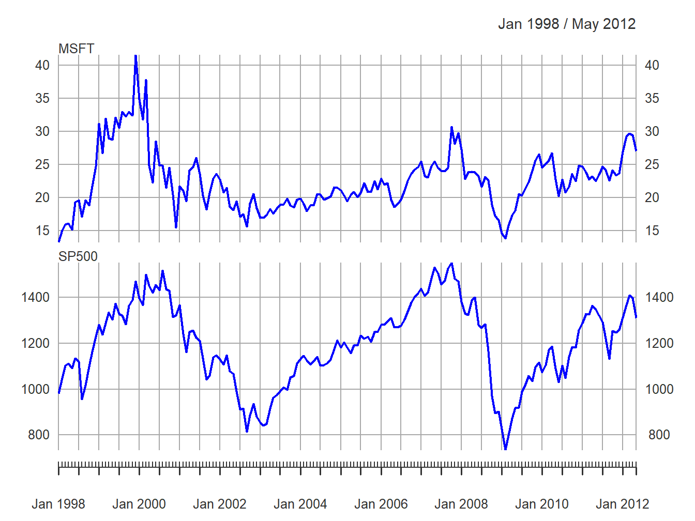
The prices exhibit random walk like behavior (no tendency to revert to a time independent mean) and appear to be non-stationary. Both prices show two large boom-bust periods associated with the dot-com period of the late 1990s and the run-up to the financial crisis of 2008 reflecting some common trend behavior of the two price series.
A time plot for the monthly simple returns is created using:
plot(msftSp500MonthlyRetS, multi.panel=TRUE, yaxis.same=FALSE,
main="", lwd=2, col="blue")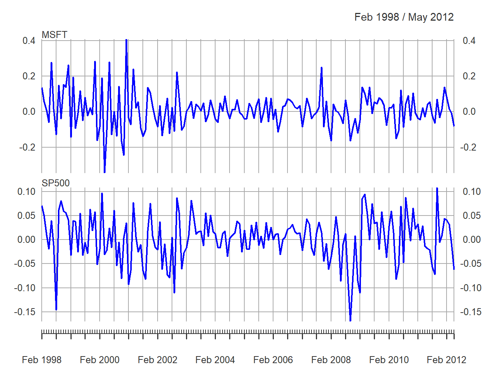
and is given in Figure 5.2. In contrast to prices, returns show clear mean-reverting behavior and the common monthly mean values look to be very close to zero. Hence, the common mean value assumption of covariance stationarity looks to be satisfied. However, the volatility (i.e., fluctuation of returns about the mean) of both series appears to change over time. Both series show higher volatility over the periods 1998 - 2003 and 2008 - 2012 than over the period 2003 - 2008. This is an indication of possible non-stationarity in volatility.2 Also, the coincidence of high and low volatility periods across assets suggests a common driver to the time varying behavior of volatility. There does not appear to be any visual evidence of systematic time dependence in the returns. Later on you will see that the estimated autocorrelations are very close to zero. The returns for Microsoft and the S&P 500 tend to go up and down together suggesting a positive correlation. \(\blacksquare\)
Example 5.3 (Plotting returns on the same graph) In Figure 5.2, the volatility of the returns on Microsoft and the S&P 500 looks to be similar but this is illusory. The y-axis scale for Microsoft is much larger than the scale for the S&P 500 index and so the volatility of Microsoft returns is actually much larger than the volatility of the S&P 500 returns. Figure 5.3 shows both returns series on the same time plot created using:
plot(msftSp500MonthlyRetS, main="", multi.panel=FALSE, lwd=2,
col=c("red", "blue"), lty=c("dashed", "solid"),
legend.loc = "topright")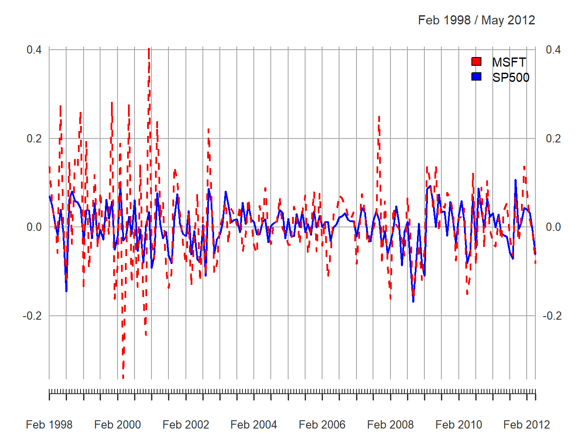
Now the higher volatility of Microsoft returns, especially before 2003, is clearly visible. However, after 2008 the volatilities of the two series look quite similar. In general, the lower volatility of the S&P 500 index represents risk reduction due to holding a large diversified portfolio. \(\blacksquare\)
Example 5.4 (Comparing simple and continuously compounded returns) Figure 5.4 compares the simple and continuously compounded (cc) monthly returns for Microsoft created using:
retDiff = msftMonthlyRetS - msftMonthlyRetC
dataToPlot = merge(msftMonthlyRetS, msftMonthlyRetC, retDiff)
colnames(dataToPlot) = c("Simple", "cc", "Diff")
plot(dataToPlot, multi.panel=TRUE, yaxis.same=FALSE, main="",
lwd=2, col=c("black", "blue", "red"))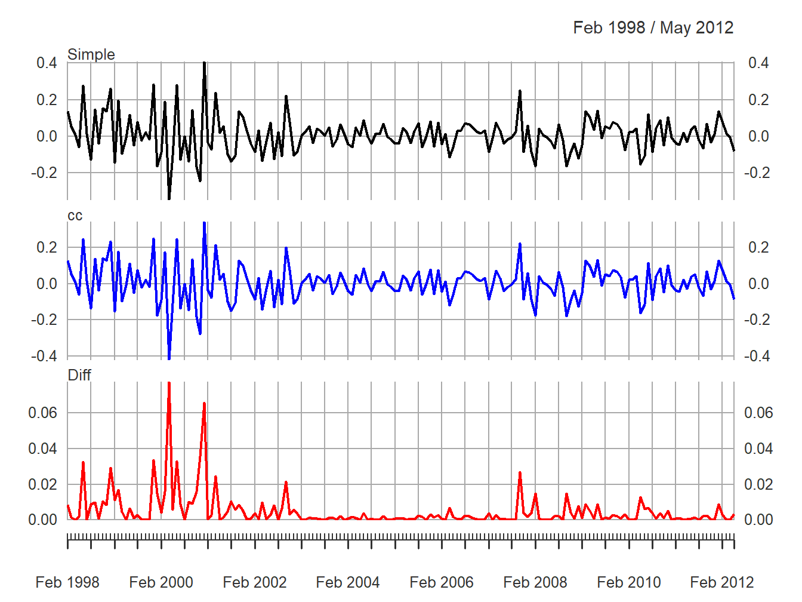
The top panel shows the simple returns, the middle panel shows the cc returns, and the bottom panel shows the difference between the simple and cc returns. Qualitatively, the simple and cc returns look almost identical. The main differences occur when the simple returns are large in absolute value (e.g., mid 2000, early 2001 and early 2008). In this case the difference between the simple and cc returns can be fairly large (e.g., as large as 0.08 in mid 2000). When the simple return is large and positive, the cc return is not quite as large; when the simple return is large and negative, the cc return is a larger negative number. \(\blacksquare\)
Example 5.5 (Plotting daily returns) Figure 5.5 shows the daily simple returns on Microsoft and the S&P 500 index created with:
plot(msftSp500DailyRetS, multi.panel=TRUE, yaxis.same=FALSE,
main="", col="blue")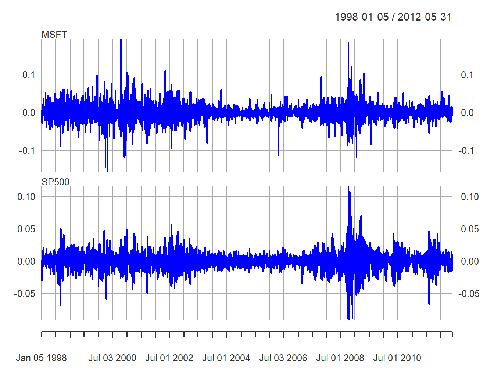
Compared with the monthly returns, the daily returns are closer to zero and the magnitude of the fluctuations (volatility) is smaller. However, the clustering of periods of high and low volatility is more pronounced in the daily returns. As with the monthly returns, the volatility of the daily returns on Microsoft is larger than the volatility of the S&P 500 returns. Also, the daily returns show some large positive and negative “spikes” that represent unusually large (inabsolute value) daily movements (e.g., Microsoft up 20% in one day and down 15% on another day). The monthly returns do not exhibit such extreme movements relative to typical volatility. \(\blacksquare\)
In this section, I consider graphical and numerical descriptive statistics for the unknown marginal pdf, \(f_{R}(r)\), of returns. Recall, I assume that the observed sample \(\{r_{t}\}_{t=1}^{T}\) is a realization from a covariance stationary and ergodic time series \(\{R_{t}\}\) where each \(R_{t}\) is a continuous random variable with common pdf \(f_{R}(r)\). The goal is to use \(\{r_{t}\}_{t=1}^{T}\) to describe properties of \(f_{R}(r)\).
I study returns and not prices because prices are random walk non-stationary. Sample descriptive statistics are only meaningful for covariance stationary and ergodic time series.
Definition 5.2 (Histogram) A histogram of returns is a graphical summary used to describe the general shape of the unknown pdf \(f_{R}(r).\) It is constructed as follows. Order returns from smallest to largest. Divide the range of observed values into \(N\) equally sized bins. Show the number or fraction of observations in each bin using a bar chart.
Example 5.6 (Histograms for the daily and monthly returns on Microsoft and the S&P 500 index) Figure 5.6 shows the histograms of the daily and monthly returns on Microsoft stock and the S&P 500 index created using the R function hist():
par(mfrow=c(2,2))
hist(msftMonthlyRetS, main="", col="cornflowerblue")
hist(msftDailyRetS, main="", col="cornflowerblue")
hist(sp500MonthlyRetS, main="", col="cornflowerblue")
hist(sp500DailyRetS, main="", col="cornflowerblue")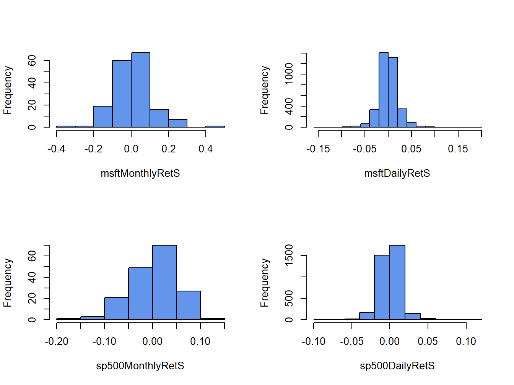
All histograms have a bell-shape like the normal distribution. The histograms of daily returns are centered around zero and those for the monthly return are centered around values slightly larger than zero. The bulk of the daily (monthly) returns for Microsoft and the S&P 500 are between -5% and 5% (-20% and 20%) and -3% and 3% (-10% and 10%), respectively. The histogram for the S&P 500 monthly returns is slightly skewed left (long left tail) due to more large negative returns than large positive returns whereas the histograms for the other returns are roughly symmetric.
When comparing two or more return distributions, it is useful to use the same bins for each histogram. Figure 5.7 shows the histograms for Microsoft and S&P 500 returns using the same 15 bins, created with the R code:
msftHist = hist(msftMonthlyRetS, plot=FALSE, breaks=15)
par(mfrow=c(2,2))
hist(msftMonthlyRetS, main="", col="cornflowerblue")
hist(msftDailyRetS, main="", col="cornflowerblue",
breaks=msftHist$breaks)
hist(sp500MonthlyRetS, main="", col="cornflowerblue",
breaks=msftHist$breaks)
hist(sp500DailyRetS, main="", col="cornflowerblue",
breaks=msftHist$breaks)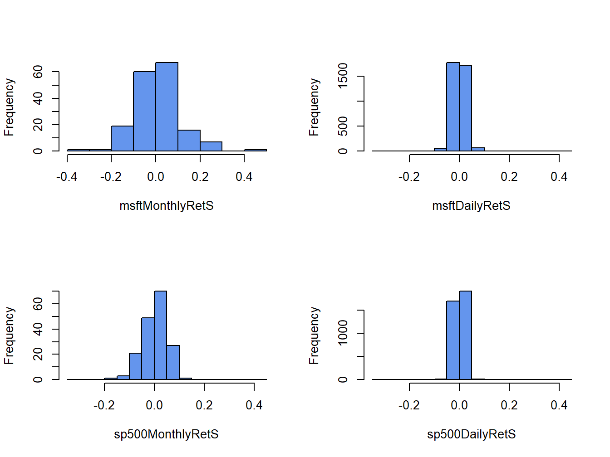
The common bins for each histogram are specified using the optional argument breaks=msftHist$breaks in the call to hist(). Using the same bins for all histograms allows us to see more clearly that the distribution of monthly returns is more spread out than the distributions for daily returns, and that the distribution of S&P 500 returns is more tightly concentrated around zero than the distribution of Microsoft returns. \(\blacksquare\)
Example 5.7 (Are Microsoft returns normally distributed? A first look) The shape of the histogram for Microsoft returns suggests that a normal distribution might be a good candidate for the unknown distribution of Microsoft returns. To investigate this conjecture, I simulate random returns from a normal distribution with mean and standard deviation calibrated to the Microsoft daily and monthly returns using:
set.seed(123)
gwnDaily = rnorm(length(msftDailyRetS),
mean=mean(msftDailyRetS), sd=sd(msftDailyRetS))
gwnDaily = xts(gwnDaily, index(msftDailyRetS))
gwnMonthly = rnorm(length(msftMonthlyRetS),
mean=mean(msftMonthlyRetS), sd=sd(msftMonthlyRetS))
gwnMonthly = xts(gwnMonthly, index(msftMonthlyRetS))Figure 5.8 shows the Microsoft monthly returns together with the simulated normal returns.
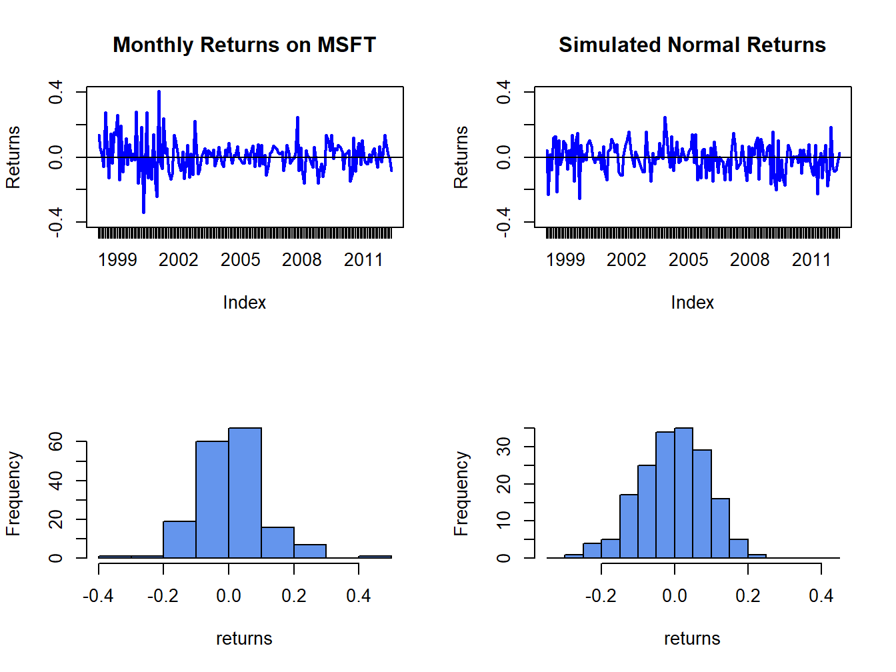
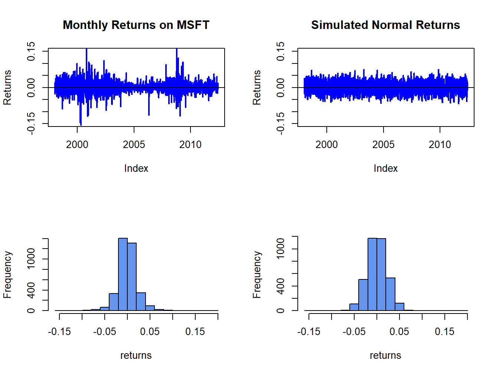
The simulated normal returns shares many of the same features as the Microsoft returns: both fluctuate randomly about zero. However, there are some important differences. In particular, the volatility of Microsoft returns appears to change over time (large before 2003, small between 2003 and 2008, and large again after 2008) whereas the simulated returns has constant volatility. Additionally, the distribution of Microsoft returns has fatter tails (more extreme large and small returns) than the simulated normal returns. Apart from these features, the simulated normal returns look remarkably like the Microsoft monthly returns.
Figure 5.9 shows the Microsoft daily returns together with the simulated normal returns. The daily returns look much less like GWN than the monthly returns. Here the constant volatility of simulated GWN does not match the volatility patterns of the Microsoft daily returns, and the tails of the histogram for the Microsoft returns are “fatter” than the tails of the GWN histogram. \(\blacksquare\)
Histograms give a good visual representation of the data distribution. The shape of the histogram, however, depends on the number of bins used. With a small number of bins, the histogram often appears blocky and fine details of the distribution are not revealed. With a large number of bins, the histogram might have many bins with very few observations. The hist() function in R smartly chooses the number of bins so that the resulting histogram typically looks good.
The main drawback of the histogram as a descriptive statistic for the underlying pdf of the data is that it is discontinuous. If it is believed that the underlying pdf is continuous, it is desirable to have a continuous graphical summary of the pdf. The smoothed histogram achieves this goal. Given a sample of data \(\{x_{t}\}_{t=1}^{T}\) the R function density() computes a smoothed estimate of the underlying pdf \(f_X(x)\) at each point \(x\) in the bins of the histogram using the formula: \[
\hat{f}_{X}(x)=\frac{1}{Tb}\sum_{t=1}^{T}k\left(\frac{x-x_{t}}{b}\right),
\] where \(k(\cdot)\) is a continuous smoothing function (typically a standard normal distribution) and \(b\) is a bandwidth (or bin-width) parameter that determines the width of the bin around \(x\) in which the smoothing takes place. The resulting pdf estimate \(\hat{f}_{X}(x)\) is a two-sided weighted average of the histogram values around \(x\).3
Example 5.8 (Smoothed histogram for Microsoft monthly returns) Figure 5.10 shows the histogram of Microsoft returns overlaid with the smoothed histogram created using:
par(mfrow=c(1,1))
MSFT.density = density(msftMonthlyRetS)
hist(msftMonthlyRetS, main="", xlab="Microsoft Monthly Returns",
col="cornflowerblue", probability=TRUE, ylim=c(0,5.5))
points(MSFT.density,type="l", col="orange", lwd=2)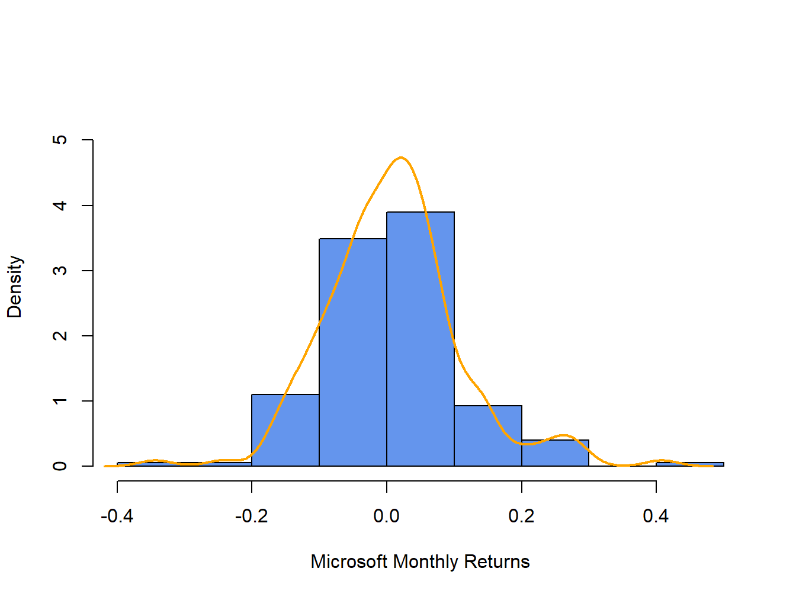
In Figure 5.10, the histogram is normalized (using the argument ), so that its total area is equal to one. The smoothed density estimate transforms the blocky shape of the histogram into a smooth continuous graph. \(\blacksquare\)
Recall, the CDF of a random variable \(X\) is the function \(F_{X}(x)=\Pr(X\leq x).\) The empirical CDF \(\hat{F}_{X}(x)\) is the sample analogue of \(F_{X}(x)\).
Definition 5.3 (Empirical CDF) The empirical CDF of a data sample \(\{x_{t}\}_{t=1}^{T}\) is the function that counts the fraction of observations less than or equal to \(x\): \[ \begin{aligned} \hat{F}_{X}(x) & =\frac{1}{T}(\#x_{i}\leq x)\\ & =\frac{\textrm{number of }x_{i}\textrm{ values }\leq x}{\textrm{sample size}} \end{aligned} \tag{5.1}\]
Example 5.9 (Empirical CDF for monthly returns on Microsoft) Computing the empirical CDF of Microsoft monthly returns at a given point, say \(r=0\), is a straightforward calculation in R:
Fhat.0 = sum(msftMonthlyRetS <= 0)/nrow(msftMonthlyRetS)
Fhat.0
#> [1] 0.471Here, the expression msftMonthlyRetS <= 0 creates a logical vector the same length as msftMonthlyRetS that is equal to TRUE when returns are less than or equal to 0 and FALSE when returns are greater than zero. Then Fhat.0 is equal to the fraction of TRUE values (returns less than or equal to zero) in the data, which gives Equation 5.1 evaluated at zero. The R function ecdf() can be used to compute and plot Equation 5.1 for all of the observed returns. For example, Figure 5.11 shows the empirical CDF for Microsoft monthly returns computed using:
plot(ecdf(coredata(msftMonthlyRetS)), main="", col="blue")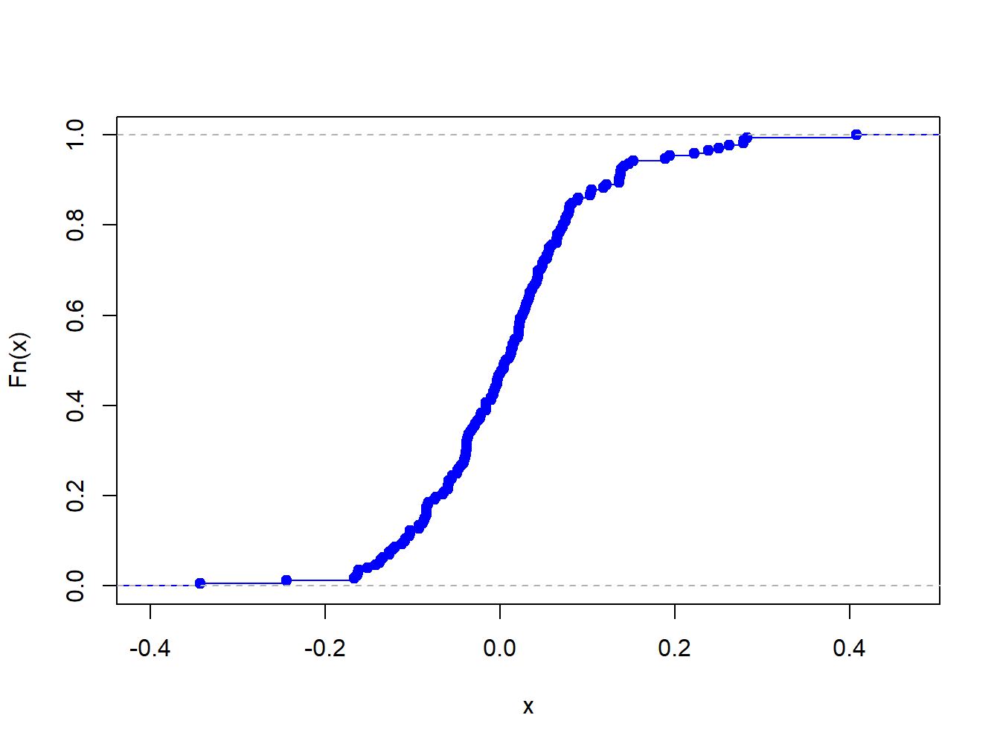
The “S” shape of the empirical CDF of Microsoft monthly returns is due to the symmetric shape of the histogram of monthly returns and resembles the CDF of a normal distribution. \(\blacksquare\)
Recall, for \(\alpha\in(0,1)\) the \(\alpha\times100\%\) quantile of the distribution of a continuous random variable \(X\) with CDF \(F_{X}\) is the point \(q_{\alpha}^{X}\) such that \(F_{X}(q_{\alpha}^{X})=\Pr(X\leq q_{\alpha}^{X})=\alpha\). The empirical quantile is defined similarly using the empirical CDF of the data.
Definition 5.4 (Empirical Quantile) The \(\alpha\times100\%\) empirical quantile (or \(100\times\alpha^{\textrm{th}}\) percentile) of a data sample \(\{x_{t}\}_{t=1}^{T}\) is the data value \(\hat{q}_{\alpha}\) such that \(\alpha\cdot100\%\) of the data are less than or equal to \(\hat{q}_{\alpha}\).
Empirical quantiles can be easily determined by ordering the data from smallest to largest giving the ordered sample (also known as order statistics): \[ x_{(1)}<x_{(2)}<\cdots<x_{(T)}. \] The empirical quantile \(\hat{q}_{\alpha}\) is the order statistic closest to \(\alpha\times T\).4
The empirical quartiles are the empirical quantiles for \(\alpha=0.25,0.5\) and \(0.75,\) respectively. The second empirical quartile \(\hat{q}_{.50}\) is called the sample median and is the data point such that half of the data is less than or equal to its value. The interquartile range (IQR) is the difference between the 3rd and 1st quartile: \[ \mathrm{IQR}=\hat{q}_{.75}-\hat{q}_{.25}, \] and shows the size of the middle of the data distribution.
Example 5.10 (Empirical quantiles of the Microsoft and S&P 500 monthly returns) The R function quantile() computes empirical quantiles for a single data series. By default, quantile() returns the empirical quartiles as well as the minimum and maximum values:
apply(msftSp500MonthlyRetS, 2, quantile)
#> MSFT SP500
#> 0% -0.34339 -0.16942
#> 25% -0.04883 -0.02094
#> 50% 0.00854 0.00809
#> 75% 0.05698 0.03532
#> 100% 0.40765 0.10772In the above code, the R function apply() is used to compute the empirical quantiles on each column of the xts object msftSp500MonthlyRetS. The syntax for apply() is:
args(apply)
#> function (X, MARGIN, FUN, ..., simplify = TRUE)
#> NULLwhere X is a multi-column data object, MARGIN specifies looping over rows (MARGIN=1) or columns (MARGIN=2), FUN specifies the R function to be applied, and ... represents any optional arguments to be passed to FUN.
Here you see that the lower (upper) quartiles of the Microsoft monthly returns are smaller (larger) than the respective quartiles for the S&P 500 index.
To compute quantiles for a specified \(\alpha\) use the probs argument. For example, to compute the 1% and 5% quantiles of the monthly returns use:
apply(msftSp500MonthlyRetS, 2, quantile, probs=c(0.01,0.05))
#> MSFT SP500
#> 1% -0.189 -0.1204
#> 5% -0.137 -0.0818Historically, there is a \(1\%\) chance of losing more than \(19\%\) (\(12\%\)) on Microsoft (S&P 500) in a given month, and a \(5\%\) chance of losing more than \(14\%\) (\(8\%\)) on Microsoft (S&P 500) in a given month.
To compute the median and IQR values for monthly returns use the R functions median() and IQR(), respectively:
med = apply(msftSp500MonthlyRetS, 2, median)
iqr = apply(msftSp500MonthlyRetS, 2, IQR)
rbind(med, iqr)
#> MSFT SP500
#> med 0.00854 0.00809
#> iqr 0.10581 0.05626The median returns are similar (about 0.8% per month) but the IQR for Microsoft is about twice as large as the IQR for the S&P 500 index. \(\blacksquare\)
Recall, the \(\alpha\times100\%\) value-at-risk (VaR) of an investment of \(\$W\) is \(\mathrm{VaR}_{\alpha}=-\$W\times q_{\alpha}^{R},\) where \(q_{\alpha}^{R}\) is the \(\alpha\times100\%\) quantile of the probability distribution of the investment simple rate of return \(R\) (recall, you multiply by \(-1\) to represent loss as a positive number). The empirical VaR or historical VaR is defined similarly using the empirical quantile.
Definition 5.5 (Empirical/Historical VaR) The \(\alpha\times100\%\) empirical VaR (sometimes called historical VaR or historical simulation VaR) of an investment of \(\$W\) is defined as: \[ \mathrm{VaR}_{\alpha}^{HS}=-\$W\times\hat{q}_{\alpha}^{R}, \tag{5.2}\] where \(\hat{q}_{\alpha}^{R}\) is the empirical \(\alpha\) quantile of a sample of simple returns \(\{R_{t}\}_{t=1}^{T}\). For a sample of continuously compounded returns \(\{r_{t}\}_{t=1}^{T}\) with empirical \(\alpha\) quantile \(\hat{q}_{\alpha}^{r}\), \[ \mathrm{VaR}_{\alpha}^{HS}=-\$W\times\left(\exp(\hat{q}_{\alpha}^{r})-1\right). \tag{5.3}\]
Historical VaR is based on the distribution of the observed returns and not on any assumed distribution for returns (e.g., the normal distribution or the log-normal distribution).
Example 5.11 (Using empirical quantiles to compute historical VaR) Consider investing \(W=\$100,000\) in Microsoft and the S&P 500 over a month. The 1% and 5% historical VaR values for these investments based on the historical samples of monthly returns are:
W = 100000
msftQuantiles = quantile(msftMonthlyRetS, probs=c(0.01, 0.05))
sp500Quantiles = quantile(sp500MonthlyRetS, probs=c(0.01, 0.05))
msftVaR = -W*msftQuantiles
sp500VaR = -W*sp500Quantiles
cbind(msftVaR, sp500VaR)
#> msftVaR sp500VaR
#> 1% 18929 12040
#> 5% 13694 8184Based on the empirical distribution of the monthly returns, a $100,000 monthly investment in Microsoft will lose $13,694 or more with 5% probability and will lose $18,929 or more with 1% probability. The corresponding values for the S&P 500 are $8,183 and $12,039, respectively. The historical VaR values for the S&P 500 are considerably smaller than those for Microsoft. In this sense, investing in Microsoft is riskier than investing in the S&P 500 index. \(\blacksquare\)
Often it is of interest to see if a given data sample could be viewed as a random sample from a specified probability distribution. One easy and effective way to do this is to compare the empirical quantiles of a data sample to the quantiles from a reference probability distribution. If the quantiles match up, then this provides strong evidence that the reference distribution is appropriate for describing the distribution of the observed data. If the quantiles do no,t match up, then the observed differences between the empirical quantiles and the reference quantiles can be used to determine a more appropriate reference distribution. It is common to use the normal distribution as the reference distribution, but any distribution can in principle be used.
Definition 5.6 (Quantile-Quantile Plot) The quantile-quantile plot (QQ-plot) gives a graphical comparison of the empirical quantiles of a data sample to those from a specified reference distribution. The QQ-plot is an xy-plot with the reference distribution quantiles on the x-axis and the empirical quantiles on the y-axis. If the quantiles exactly match up then the QQ-plot is a straight line. If the quantiles do not match up, then the shape of the QQ-plot indicates which features of the data are not captured by the reference distribution.
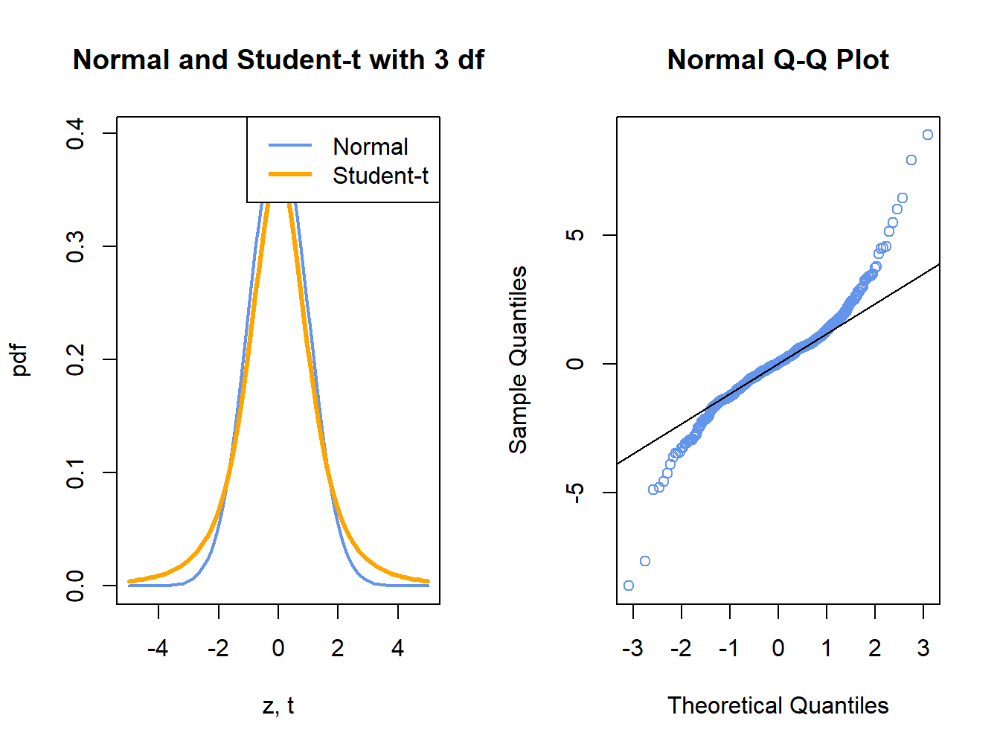
Example 5.12 (QQ-plots for non-normal data) Figure 5.12 shows a normal QQ-plot for data simulated from a Student’s t distribution with 3 degrees-of-freedom which has fatter tails than the normal distribution. Notice how the normal QQ-plot deviates from the straight line for both large and small quantiles of the normal distribution. This S-shape tells us that both extremely small and extremely large empirical quantiles (on the vertical axis) are larger (in absolute value) than the corresponding theoretical quantiles of the normal distribution.
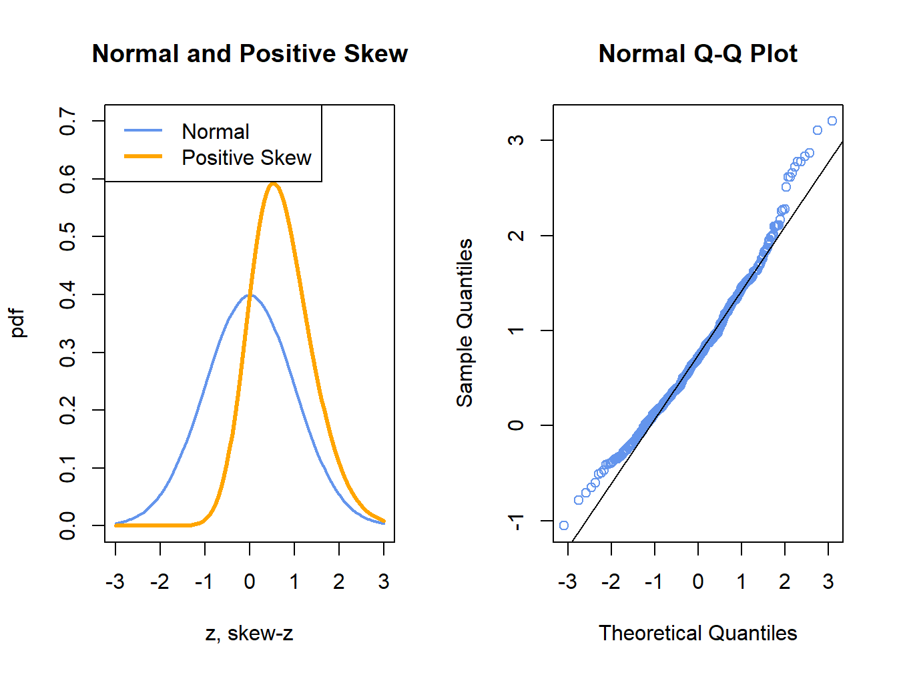
Figure 5.13 shows a normal QQ-plot for data simulated from a distribution with positive skewness which has more density in the right tail than in the left tail. Here the normal QQ-plot has a convex shape relative to the straight line indicating that the lower (upper) empirical quantiles are closer to (farther from) zero than the corresponding theoretical quantiles of the normal distribution.
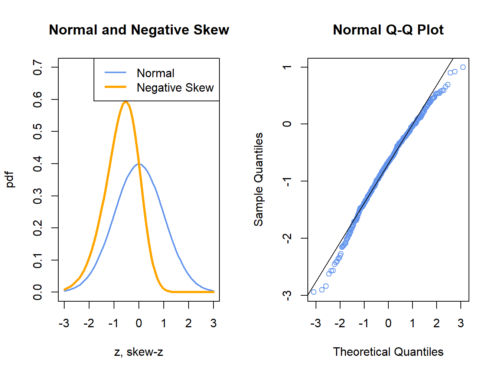
Figure 5.14 shows a normal QQ-plot for data simulated from a distribution with negative skewness which has more density in the left tail than in the right tail. Here the normal QQ-plot has a concave shape relative to the straight line indicating that the lower (upper) empirical quantiles are farther from (closer to) zero than the corresponding theoretical quantiles of the normal distribution. \(\blacksquare\) :::
Example 5.13 (Normal QQ-plots for GWN Microsoft and S&P 500 returns) The R function qqnorm() creates a QQ-plot for a data sample using the normal distribution as the reference distribution. Figure 5.15 shows normal QQ-plots for the simulated GWN data, Microsoft returns and S&P 500 returns.
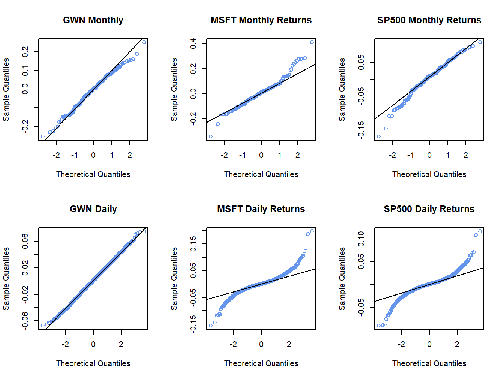
The normal QQ-plot for the simulated GWN data is very close to a straight line, as it should be since the data are simulated from a normal distribution.5 The qqline() function draws a straight line through the points to help determine if the quantiles match up. The normal QQ-plots for the Microsoft and S&P 500 monthly returns are linear in the middle of the distribution but deviate from linearity in the tails of the distribution. In the normal QQ-plot for Microsoft monthly returns, the theoretical normal quantiles on the x-axis are too small in both the left and right tails because the points fall below the straight line in the left tail and fall above the straight line in the right tail. Hence, the normal distribution does not match the empirical distribution of Microsoft monthly returns in the extreme tails of the distribution. In other words, the Microsoft returns have fatter tails than the normal distribution. For the S&P 500 monthly returns, the theoretical normal quantiles are too small only for the left tail of the empirical distribution of returns (points fall below the straight line in the left tail only). This reflects the long left tail (negative skewness) of the empirical distribution of S&P 500 returns. The normal QQ-plots for the daily returns on Microsoft and the S&P 500 index both exhibit a pronounced tilted S-shape with extreme departures from linearity in the left and right tails of the distributions. The daily returns clearly have much fatter tails than the normal distribution. \(\blacksquare\)
Example 5.14 (Student’s t QQ-plot for Microsoft returns) The function qqPlot() from the car package or the function chart.QQPlot() from the PerformanceAnalytics package can be used to create a QQ-plot against any reference distribution that has a corresponding quantile function implemented in R. For example, a QQ-plot for the Microsoft returns using a Student’s t reference distribution with 5 degrees of freedom can be created using:
qqPlot(coredata(msftMonthlyRetS), distribution="t",
df=5, ylab="MSFT quantiles", envelope=FALSE, id=FALSE)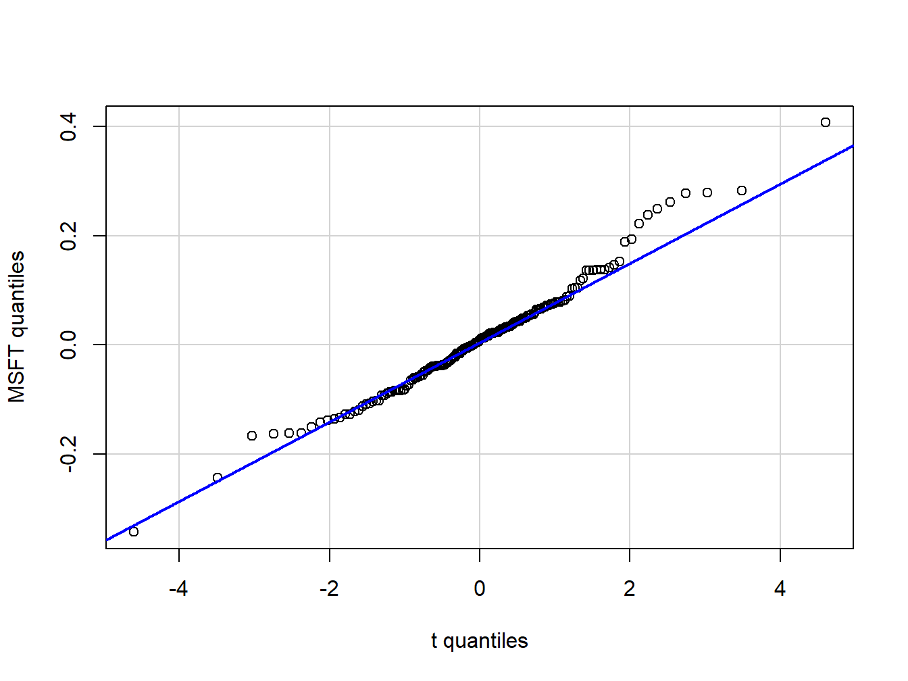
In the function qqPlot(), the argument distribution= "t" specifies that the quantiles are to be computed using the R function qt().6 Figure 5.16 shows the resulting graph. Here, with a reference distribution with fatter tails than the normal distribution the QQ-plot for Microsoft returns is closer to a straight line. This indicates that the Student’s t distribution with 5 degrees of freedom is a better reference distribution for Microsoft returns than the normal distribution. \(\blacksquare\)
Recall, for a random variable \(X\) the shape measures of center, spread, asymmetry and tail thickness of the pdf are: \[\begin{align*} \textrm{center} & :\mu_{X}=E[X],\\ \text{spread} & :\sigma_{X}^{2}=\mathrm{var}(X)=E[(X-\mu_{X})^{2}],\\ \text{spread} & :\sigma_{X}=\sqrt{\mathrm{var}(X)}\\ \text{asymmetry} & :\mathrm{skew}_{X}=E[(X-\mu_{X})^{3}]/\sigma^{3},\\ \text{tail thickness} & :\mathrm{kurt}_{X}=E[(X-\mu_{X})^{4}]/\sigma^{4}. \end{align*}\]
Definition 5.7 (Sample Statistics) The shape measures for the empirical distribution (e.g., as measured by the histogram) of a data sample \(\{x_{t}\}_{t=1}^{T}\) are the sample statistics: \[ \hat{\mu}_{x} =\bar{x}=\frac{1}{T}\sum_{t=1}^{T}x_{t}, \tag{5.4}\] \[ \hat{\sigma}_{x}^{2} =s_{x}^{2}=\frac{1}{T-1}\sum_{t=1}^{T}(x_{t}-\bar{x})^{2}, \tag{5.5}\] \[ \hat{\sigma}_{x} =\sqrt{\hat{\sigma}_{x}^{2}}, \tag{5.6}\] \[ \widehat{\mathrm{skew}}_{x} =\frac{\frac{1}{T-1}\sum_{t=1}^{T}(x_{t}-\bar{x})^{3}}{s_{x}^{3}}, \tag{5.7}\] \[ \widehat{\mathrm{kurt}}_{x} =\frac{\frac{1}{T-1}\sum_{t=1}^{T}(x_{t}-\bar{x})^{4}}{s_{x}^{4}}. \tag{5.8}\]
The sample mean, \(\hat{\mu}_{X}\), measures the center of the histogram; the sample standard deviation, \(\hat{\sigma}_{x}\), measures the spread of the data about the mean in the same units as the data; the sample skewness, \(\widehat{\mathrm{skew}}_{x}\), measures the asymmetry of the histogram; the sample kurtosis, \(\widehat{\mathrm{kurt}}_{x}\), measures the tail-thickness of the histogram. The sample excess kurtosis, defined as the sample kurtosis minus 3: \[ \widehat{\mathrm{ekurt}}_{x}=\widehat{\mathrm{kurt}}_{x}-3, \tag{5.9}\] measures the tail thickness of the data sample relative to that of a normal distribution.7
Notice that the divisor in Equation 5.5 - Equation 5.8 is \(T-1\) and not \(T\). This is called a degrees-of-freedom correction. In computing the sample variance, skewness and kurtosis, one degree-of-freedom in the sample is used up in the computation of the sample mean so that there are effectively only \(T-1\) observations available to compute the statistics.8
Example 5.15 (Sample shape statistics for the returns on Microsoft and S&P 500) The R functions for computing Equation 5.4 - Equation 5.8 are mean(), var() and sd(), respectively. There are no functions for computing Equation 5.7 and Equation 5.8 in base R. The functions skewness() and kurtosis() in the PerformanceAnalytics package compute the sample skewness Equation 5.7 and the sample excess kurtosis Equation 5.9, respectively.9 The sample statistics for the Microsoft and S&P 500 monthly returns are computed using:
statsMonthly = rbind(apply(msftSp500MonthlyRetS, 2, mean),
apply(msftSp500MonthlyRetS, 2, var),
apply(msftSp500MonthlyRetS, 2, sd),
apply(msftSp500MonthlyRetS, 2, skewness),
apply(msftSp500MonthlyRetS, 2, kurtosis))
rownames(statsMonthly) = c("Mean", "Variance", "Std Dev",
"Skewness", "Excess Kurtosis")
round(statsMonthly, digits=4)
#> MSFT SP500
#> Mean 0.0092 0.0028
#> Variance 0.0103 0.0023
#> Std Dev 0.1015 0.0478
#> Skewness 0.4853 -0.5631
#> Excess Kurtosis 1.9148 0.6545The mean and standard deviation for Microsoft monthly returns are 0.9% and 10%, respectively. Annualized, these values are approximately 10.8% (.009 \(\times12\)) and 34.6% (.10 \(\times\) \(\sqrt{12}\)), respectively. The corresponding monthly and annualized values for S&P 500 returns are .3% and 4.7%, and 4.8% and 16.6%, respectively. Microsoft has a higher mean and volatility than S&P 500. The lower volatility for the S&P 500 reflects risk reduction due to diversification (holding many assets in a portfolio). The sample skewness for Microsoft, 0.485, is slightly positive and reflects the approximate symmetry in the histogram in Figure 5.6. The skewness for S&P 500, however, is moderately negative at -0.563 which reflects the somewhat long left tail of the histogram in Figure 5.6. The sample excess kurtosis values for Microsoft and S&P 500 are 1.915 and 0.654, respectively, and indicate that the tails of the histograms are slightly fatter than the tails of a normal distribution.
The sample statistics for the daily returns are:
statsDaily = rbind(apply(msftSp500DailyRetS, 2, mean),
apply(msftSp500DailyRetS, 2, var),
apply(msftSp500DailyRetS, 2, sd),
apply(msftSp500DailyRetS, 2, skewness),
apply(msftSp500DailyRetS, 2, kurtosis))
rownames(statsDaily) = rownames(statsMonthly)
round(statsDaily, digits=4)
#> MSFT SP500
#> Mean 0.0005 0.0002
#> Variance 0.0005 0.0002
#> Std Dev 0.0217 0.0135
#> Skewness 0.2506 0.0012
#> Excess Kurtosis 7.3915 6.9971For a daily horizon, the sample mean for both series is zero (to three decimals). As with the monthly returns, the sample standard deviation for Microsoft, 2.2%, is about twice as big as the sample standard deviation for the S&P 500 index, 1.4%. Neither daily return series exhibits much skewness, but the excess kurtosis values are much larger than the corresponding monthly values indicating that the daily returns have much fatter tails and are more non-normally distributed than the monthly return series.
The daily simple returns are very close to the daily cc returns so the square-root-of-time rule (with 20 trading days within the month) can be applied to the sample mean and standard deviation of the simple returns:
20*statsDaily["Mean", ]
#> MSFT SP500
#> 0.00933 0.00345
sqrt(20)*statsDaily["Std Dev", ]
#> MSFT SP500
#> 0.0971 0.0603Comparing these values to the corresponding monthly sample statistics shows that the square-root-of-time-rule applied to the daily mean and standard deviation gives results that are fairly close to the actual monthly mean and standard deviation. \(\blacksquare\)
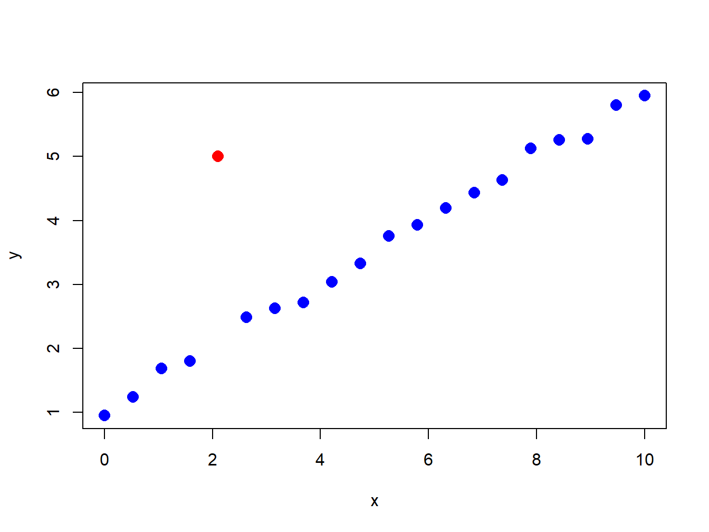
Figure 5.17 nicely illustrates the concept of an outlier in a data sample. All of the points are following a nice systematic relationship except one - the red dot “outlier”. Outliers can be thought of in two ways. First, an outlier can be the result of a data entry error. In this view, the outlier is not a valid observation and should be removed from the data sample. Second, an outlier can be a valid data point whose behavior is seemingly unlike the other data points. In this view, the outlier provides important information and should not be removed from the data sample. For financial market data, outliers are typically extremely large or small values that could be the result of a data entry error (e.g. price entered as 10 instead of 100) or a valid outcome associated with some unexpected bad or good news. Outliers are problematic for data analysis because they can greatly influence the value of certain sample statistics.
| Statistic | GWN | GWN with Outlier | %\(\Delta\) |
|---|---|---|---|
| Mean | -0.0054 | -0.0072 | 32% |
| Variance | 0.0086 | 0.0101 | 16% |
| Std. Deviation | 0.0929 | 0.1003 | 8% |
| Skewness | -0.2101 | -1.0034 | 378% |
| Kurtosis | 2.7635 | 7.1530 | 159% |
| Median | -0.0002 | -0.0002 | 0% |
| IQR | 0.1390 | 0.1390 | 0% |
Example 5.16 (Effect of outliers on sample statistics) To illustrate the impact of outliers on sample statistics, the simulated monthly GWN data is polluted by a single large negative outlier:
gwnMonthlyOutlier = gwnMonthly
gwnMonthlyOutlier[20] = -sd(gwnMonthly)*6Figure 5.18 shows the resulting data. Visually, the outlier is much smaller than a typical negative observation and creates a pronounced asymmetry in the histogram. Table 5.1 compares the sample statistics Equation 5.4 - Equation 5.8 of the unpolluted and polluted data. All of the sample statistics are influenced by the single outlier with the skewness and kurtosis being influenced the most. The mean decreases by 32% and the variance and standard deviation increase by 16% and 8%, respectively. The skewness changes by 378% and the kurtosis by 159%. Table 5.1 also shows the median and the IQR, which are quantile-based statistics for the center and spread, respectively. Notice that these statistics are unaffected by the outlier.
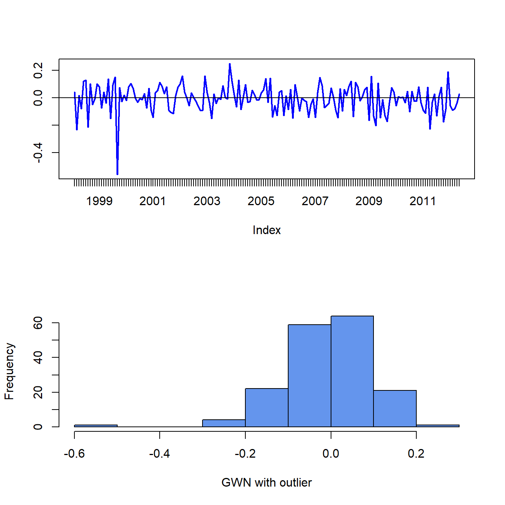
\(\blacksquare\)
The previous example shows that the common sample statistics Equation 5.4 - Equation 5.8 based on the sample average and deviations from the sample average can be greatly influenced by a single outlier, whereas quantile-based sample statistics are not. Sample statistics that are not greatly influenced by a single outlier are called (outlier) robust statistics.
A commonly used rule-of-thumb defines an outlier as an observation that is beyond the sample mean plus or minus three times the sample standard deviation. The intuition for this rule comes from the fact that if \(X\sim N(\mu,\sigma^{2})\) then \(\Pr(\mu-3\sigma\leq X\leq\mu+3\sigma)\approx0.99\). While the intuition for this definition is clear, the practical implementation of the rule using the sample mean, \(\hat{\mu}\), and sample standard deviation, \(\hat{\sigma}\), is problematic because these statistics can be heavily influenced by the presence of one or more outliers (as illustrated in the previous sub-section). In particular, both \(\hat{\mu}\) and \(\hat{\sigma}\) become larger (in absolute value) when there are outliers and this may cause the rule-of-thumb rule to miss identifying an outlier or to identify a non-outlier as an outlier. That is, the rule-of-thumb outlier detection rule is not robust to outliers!
A natural fix to the above outlier detection rule-of-thumb is to use outlier robust statistics, such as the median and the IQR, instead of the mean and standard deviation. To this end, a commonly used definition of a moderate outlier in the right tail of the distribution (value above the median) is a data point \(x\) such that: \[ \hat{q}_{.75}+1.5\cdot\mathrm{IQR}<x<\hat{q}_{.75}+3\cdot\mathrm{IQR}. \tag{5.10}\] To understand this rule, recall that the IQR is where the middle 50% of the data lies. If the data were normally distributed then \(\hat{q}_{.75}\approx\hat{\mu}+0.67\times\hat{\sigma}\) and \(\mathrm{IQR}\approx1.34\times\hat{\sigma}\). Then Equation 5.10 is approximately: \[ \hat{\mu}+2.67\times\hat{\sigma}<x<\hat{\mu}+4.67\times\hat{\sigma} \] Similarly, a moderate outlier in the left tail of the distribution (value below the median) is a data point such that, \[ \hat{q}_{.25}-3\cdot IQR<x<\hat{q}_{.25}-1.5\cdot\mathrm{IQR}. \] Extreme outliers are those observations \(x\) even further out in the tails of the distribution and are defined using: \[\begin{align*} x & >\hat{q}_{.75}+3\cdot\mathrm{IQR},\\ x & <\hat{q}_{.25}-3\cdot\mathrm{IQR}. \end{align*}\] For example, with normally distributed data an extreme outlier would be an observation that is more than \(4.67\) standard deviations above the mean.
A boxplot of a data series describes the distribution using outlier robust statistics. The basic boxplot is illustrated in Figure 5.19. The middle of the distribution is shown by a rectangular box whose top and bottom sides are approximately the first and third quartiles, \(\hat{q}_{.25}\) and \(\hat{q}_{.75},\) respectively. The line roughly in the middle of the box is the sample median, \(\hat{q}_{.5}.\) The top whisker is a horizontal line that represents either the largest data value or \(\hat{q}_{.75}+1.5\cdot IQR\), whichever is smaller. Similarly, the bottom whisker is located at either the smallest data value or \(\hat{q}_{.25}-1.5\cdot IQR,\) whichever is closer to \(\hat{q}_{.25}\). Data values above the top whisker and below the bottom whisker are displayed as circles and represent extreme observations. If a data distribution is symmetric then the median is in the center of the box and the top and bottom whiskers are approximately the same distance from the box. Fat tailed distributions will have observations above and below the whiskers.
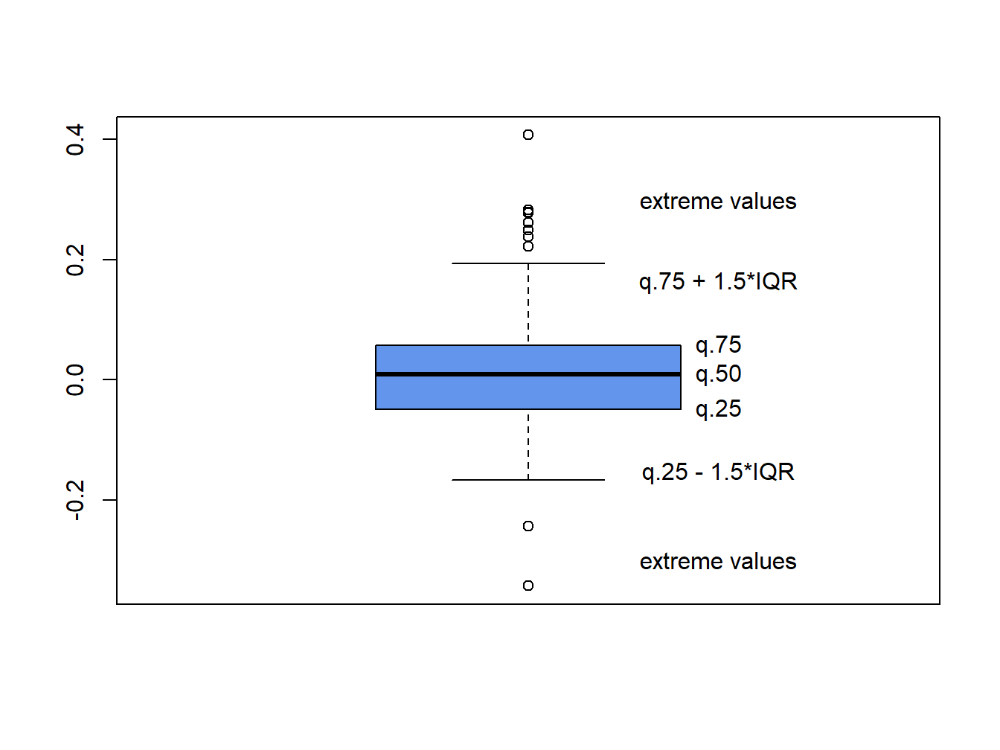
Example 5.17 (Boxplots of return distributions) Boxplots are a great tool for visualizing the return distribution of one or more assets. Figure 5.20 shows the boxplots of the monthly continuously compounded and simple returns on Microsoft and the S&P 500 index computed using:10
dataToPlot = merge(msftMonthlyRetS, msftMonthlyRetC,
sp500MonthlyRetS, sp500MonthlyRetC)
colnames(dataToPlot) = c("msftRetS", "msftRetC",
"sp500RetS", "sp500RetC")
boxplot(coredata(dataToPlot), main="Simple vs. CC Monthly Returns",
col="cornflowerblue")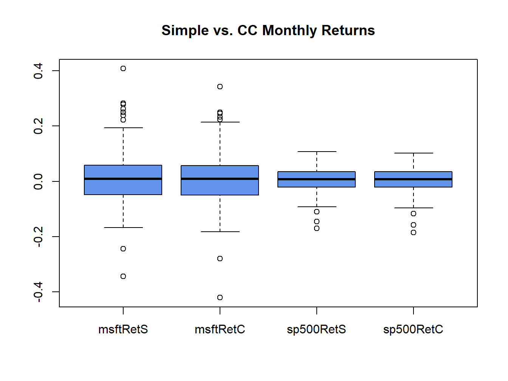
The Microsoft returns have both positive and negative outliers whereas the S&P 500 index returns only have negative outliers. The boxplots also clearly show that the distributions of the continuously compounded and simple returns are very similar except for the extreme tails of the distributions. \(\blacksquare\)
In this section, I consider graphical and numerical descriptive statistics for summarizing the linear time dependence in a time series.
For a covariance stationary time series process \(\{X_{t}\}\), the autocovariances \(\gamma_{j}=\mathrm{cov}(X_{t},X_{t-j})\) and autocorrelations \(\rho_{j}=\mathrm{cov}(X_{t},X_{t-j})/\sqrt{\mathrm{var}(X_{t})\mathrm{var}(X_{t-j})}=\gamma_{j}/\sigma^{2}\) describe the linear time dependencies in the process. For a sample of data \(\{x_{t}\}_{t=1}^{T}\), the linear time dependencies are captured by the sample autocovariances and sample autocorrelations: \[\begin{align*} \hat{\gamma}_{j} & =\frac{1}{T-1}\sum_{t=j+1}^{T}(x_{t}-\bar{x})(x_{t-j}-\bar{x}),~j=1,2,\ldots,T-J+1,\\ \hat{\rho}_{j} & =\frac{\hat{\gamma}_{j}}{\hat{\sigma}^{2}},~j=1,2,\ldots,T-J+1, \end{align*}\] where \(\hat{\sigma}^{2}\) is the sample variance Equation 5.5. The sample autocorrelation function (SACF) is a plot of \(\hat{\rho}_{j}\) vs. \(j\), and gives a graphical view of the linear time dependencies in the observed data.
Example 5.18 (SACF for the Microsoft and S&P 500 returns) The R function acf() computes and plots the sample autocorrelations \(\hat{\rho}_{j}\) of a time series for a specified number of lags. For example, to compute \(\hat{\rho}_{j}\) for \(j=1,\ldots,5\) for the monthly and daily returns on Microsoft use:
acf(coredata(msftMonthlyRetS), lag.max=5, plot=FALSE)
#>
#> Autocorrelations of series 'coredata(msftMonthlyRetS)', by lag
#>
#> 0 1 2 3 4 5
#> 1.000 -0.193 -0.114 0.193 -0.139 -0.023
acf(coredata(msftDailyRetS), lag.max=5, plot=FALSE)
#>
#> Autocorrelations of series 'coredata(msftDailyRetS)', by lag
#>
#> 0 1 2 3 4 5
#> 1.000 -0.044 -0.018 -0.010 -0.042 0.018None of these sample autocorrelations are very big and indicate lack of linear time dependence in the monthly and daily returns.
Sample autocorrelations can also be visualized using the function acf(). Figure 5.21 shows the SACF for the monthly and daily returns on Microsoft and the S&P 500 created using:
par(mfrow=c(2,2))
acf(coredata(msftMonthlyRetS), main="msftMonthlyRetS", lwd=2)
acf(coredata(sp500MonthlyRetS), main="sp500MonthlyRetS", lwd=2)
acf(coredata(msftDailyRetS), main="msftDailyRetS", lwd=2)
acf(coredata(sp500DailyRetS), main="sp500DailyRetS", lwd=2)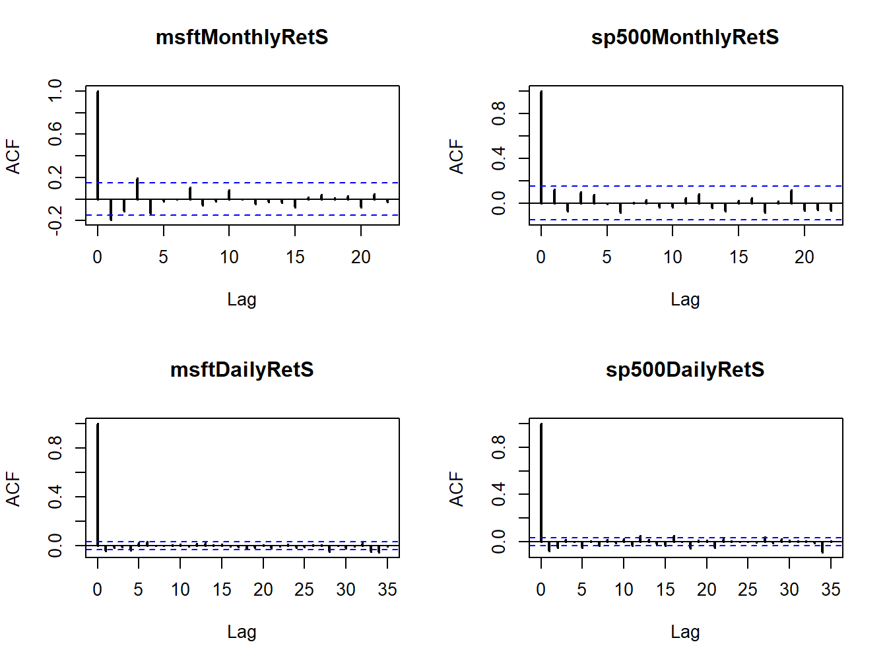
None of the series show strong evidence for linear time dependence. The monthly returns have slightly larger sample autocorrelations at low lags than the daily returns. The dotted lines on the SACF plots are 5% critical values for testing the null hypothesis that the true autocorrelations \(\rho_{j}\) are equal to zero (see chapter Chapter 9). If \(\hat{\rho}_{j}\) crosses the dotted line then the null hypothesis that \(\rho_{j}=0\) can be rejected at the 5% significance level. \(\blacksquare\)
The daily and monthly returns of Microsoft and the S&P 500 index do not exhibit much evidence for linear time dependence. Their returns are essentially uncorrelated over time. However, the lack of autocorrelation does not mean that returns are independent over time. There can be nonlinear time dependence. Indeed, there is strong evidence for a particular type of nonlinear time dependence in the daily returns of Microsoft and the S&P 500 index that is related to time varying volatility. This nonlinear time dependence, however, is less pronounced in the monthly returns.
Example 5.19 (GWN and lack of time independence) Let \(y_{t}\sim\mathrm{GWN}(0,\sigma^{2})\). Then \(y_{t}\) is, by construction, independent over time. This implies that any function of \(y_{t}\) is also independent over time. To illustrate, Figure 5.22 shows \(y_{t}\), \(y_{t}^{2}\) and \(|y_{t}|\) together with their SACFs where \(y_{t}\sim \mathrm{GWN}(0,1)\) for \(t=1,\ldots,500\). Notice that all of the sample autocorrelations are essentially zero which confirms the lack of linear time dependence in \(y_{t}\), \(y_{t}^{2}\) and \(|y_{t}|\).
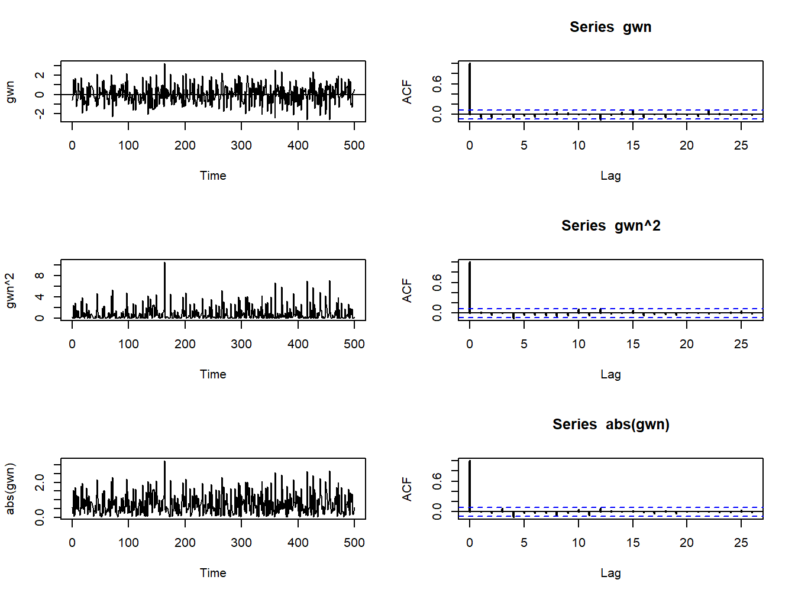
\(\blacksquare\)
Figure 5.5 and Figure 5.2 show that the daily and monthly returns on Microsoft and the S&P 500 index appear to exhibit periods of volatility clustering. That is, high periods of volatility tend to be followed by periods of high volatility and periods of low volatility appear to be followed by periods of low volatility. In other words, the volatility of the returns appears to exhibit some time dependence. This time dependence in volatility causes linear time dependence in the absolute value and squared value of returns.
Example 5.20 (Nonlinear time dependence in the S&P 500 returns) To illustrate nonlinear time dependence in asset returns, Figure 5.23 shows the daily returns, absolute returns and squared returns for the S&P 500 index. Notice how the absolute and squared returns are large (small) when the daily returns are more (less) volatile. Figure 5.24 shows the SACFs for the absolute and squared daily and monthly returns. There is clear evidence of time dependence in the daily absolute and squared returns while there is some evidence of time dependence in the monthly absolute and squared returns. Since the absolute and squared daily returns reflect the volatility of the daily returns, the SACFs show a strong positive linear time dependence in daily return volatility.
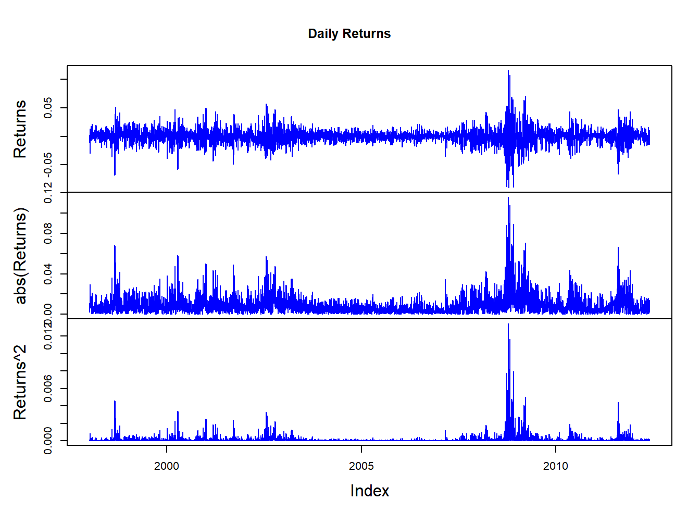
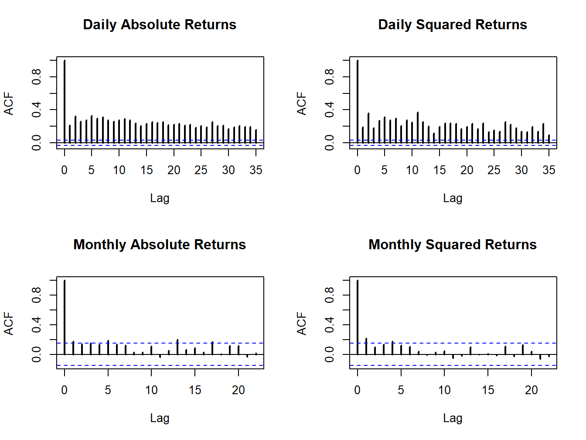
\(\blacksquare\)
In this section, I consider graphical and numerical descriptive statistics for summarizing two or more data series.
The contemporaneous dependence properties between two data series \(\{x_{t}\}_{t=1}^{T}\) and \(\{y_{t}\}_{t=1}^{T}\) can be displayed graphically in a scatterplot, which is simply an xy-plot of the bivariate data.
Example 5.21 (Scatterplot of Microsoft and S&P 500 returns) Figure 5.25 shows the scatterplots between the Microsoft and S&P 500 monthly and daily returns created using:
par(mfrow=c(1,2))
plot(coredata(sp500MonthlyRetS),coredata(msftMonthlyRetS),
main="Monthly returns", xlab="S&P500", ylab="MSFT", lwd=2,
pch=16, cex=1.25, col="blue")
abline(v=mean(sp500MonthlyRetS))
abline(h=mean(msftMonthlyRetS))
plot(coredata(sp500DailyRetS),coredata(msftDailyRetS),
main="Daily returns", xlab="S&P500", ylab="MSFT", lwd=2,
pch=16, cex=1.25, col="blue")
abline(v=mean(sp500DailyRetS))
abline(h=mean(msftDailyRetS))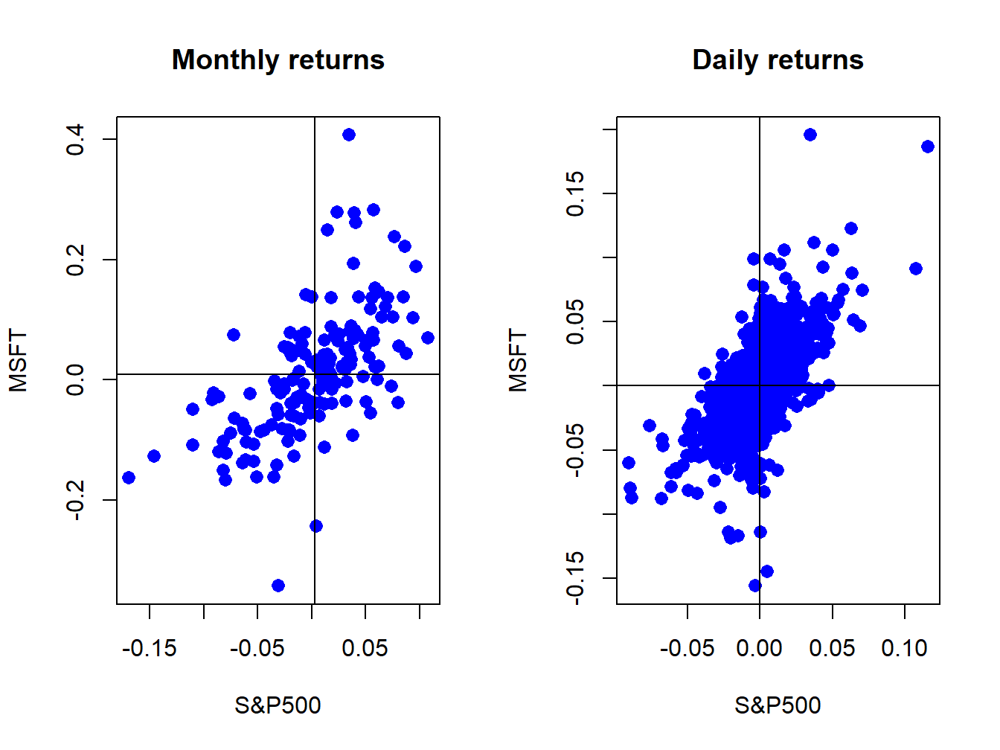
The S&P 500 returns are put on the x-axis and the Microsoft returns on the y-axis because the “market”, as proxied by the S&P 500, is often thought as an independent variable driving individual asset returns. The upward sloping orientation of the scatterplots indicate a positive linear dependence between Microsoft and S&P 500 returns at both the monthly and daily frequencies. \(\blacksquare\)
Example 5.22 (Pair-wise scatterplots for multiple series) For more than two data series, the R function pairs() plots all pair-wise scatterplots in a single plot. For example, to plot all pair-wise scatterplots for the GWN, Microsoft returns and S&P 500 returns use:
dataToPlot = merge(gwnMonthly,msftMonthlyRetS,sp500MonthlyRetS)
pairs(coredata(dataToPlot), col="blue", pch=16, cex=1.25, cex.axis=1.25)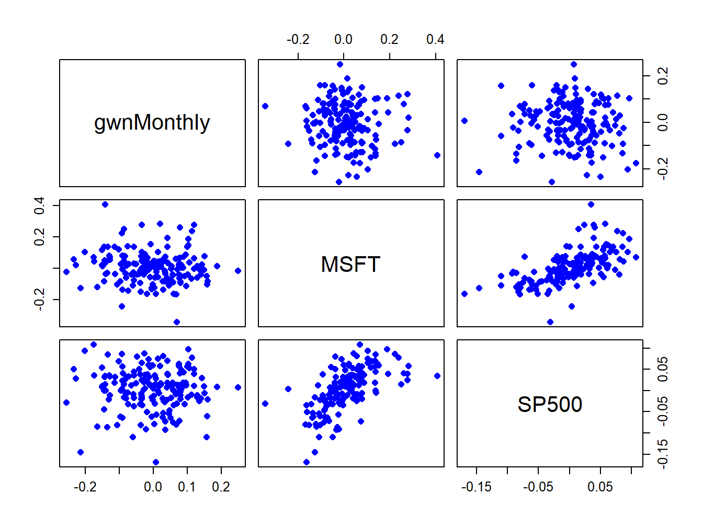
The top row of Figure 5.26 shows the scatterplots between the pairs (MSFT, GWN) and (SP500, GWN), the second row shows the scatterplots between the pairs (GWN, MSFT) and (SP500, MSFT), the third row shows the scatterplots between the pairs (GWN, SP500) and (MSFT, SP500). The plots in the lower triangle are the same as the plots in the upper triangle except the axes are reversed. \(\blacksquare\)
For two random variables \(X\) and \(Y,\) the direction of linear dependence is captured by the covariance, \(\sigma_{XY}=E[(X-\mu_{X})(Y-\mu_{Y})],\) and the direction and strength of linear dependence is captured by the correlation, \(\rho_{XY}=\sigma_{XY}/\sigma_{X}\sigma_{Y}.\)
Definition 5.8 (Sample Covariance and Correlation) For two data series \(\{x_{t}\}_{t=1}^{T}\) and \(\{y_{t}\}_{t=1}^{T},\) the sample covariance, \[ \hat{\sigma}_{xy}=\frac{1}{T-1}\sum_{t=1}^{T}(x_{t}-\bar{x})(y_{t}-\bar{y}), \tag{5.11}\] measures the direction of linear dependence, and the sample correlation, \[ \hat{\rho}_{xy}=\frac{\hat{\sigma}_{xy}}{\hat{\sigma}_{x}\hat{\sigma}_{x}}, \tag{5.12}\] measures the direction and strength of linear dependence. In Equation 5.12, \(\hat{\sigma}_{x}\) and \(\hat{\sigma}_{y}\) are the sample standard deviations of \(\{x_{t}\}_{t=1}^{T}\) and \(\{y_{t}\}_{t=1}^{T},\) respectively, defined by Equation 5.6.
When more than two data series are being analyzed, it is often convenient to compute all pair-wise covariances and correlations at once using matrix algebra. Recall, for a vector of \(N\) random variables \(\mathbf{X}=(X_{1},\ldots,X_{N})^{\prime}\) with mean vector \(\mu=(\mu_{1},\ldots,\mu_{N})^{\prime}\) the \(N\times N\) variance-covariance matrix is defined as: \[ \boldsymbol{\Sigma}=\mathrm{var}(\mathbf{X})=E[(\mathbf{X}-\boldsymbol{\mu})(\mathbf{X}-\boldsymbol{\mu})^{\prime}]=\left(\begin{array}{cccc} \sigma_{1}^{2} & \sigma_{12} & \cdots & \sigma_{1N}\\ \sigma_{12} & \sigma_{2}^{2} & \cdots & \sigma_{2N}\\ \vdots & \vdots & \ddots & \vdots\\ \sigma_{1N} & \sigma_{2N} & \cdots & \sigma_{N}^{2} \end{array}\right). \]
Definition 5.9 (Sample Covariance and Correlation Matrices) For \(N\) data series \(\{\mathbf{x}_{t}\}_{t=1}^{T},\) where \(x_{t}=(x_{1t},\ldots,x_{Nt})^{\prime},\) the sample covariance matrix is computed using: \[ \hat{\boldsymbol{\Sigma}}=\frac{1}{T-1}\sum_{t=1}^{T}(\mathbf{x}_{t}-\hat{\boldsymbol{\mu}})(\mathbf{x}_{t}-\hat{\boldsymbol{\mu}})^{\prime}=\left(\begin{array}{cccc} \hat{\sigma}_{1}^{2} & \hat{\sigma}_{12} & \cdots & \hat{\sigma}_{1N}\\ \hat{\sigma}_{12} & \hat{\sigma}_{2}^{2} & \cdots & \hat{\sigma}_{2N}\\ \vdots & \vdots & \ddots & \vdots\\ \hat{\sigma}_{1N} & \hat{\sigma}_{2N} & \cdots & \hat{\sigma}_{N}^{2} \end{array}\right), \tag{5.13}\] where \(\hat{\boldsymbol{\mu}}\) is the \(N\times1\) sample mean vector. Define the \(N\times N\) diagonal matrix: \[ \mathbf{\hat{D}}=\left(\begin{array}{cccc} \hat{\sigma}_{1} & 0 & \cdots & 0\\ 0 & \hat{\sigma}_{2} & \cdots & 0\\ \vdots & \vdots & \ddots & \vdots\\ 0 & 0 & \cdots & \hat{\sigma}_{N} \end{array}\right). \tag{5.14}\] Then the \(N\times N\) sample correlation matrix \(\mathbf{\hat{C}}\) is computed as: \[ \mathbf{\hat{C}}=\mathbf{\hat{D}}^{-1}\hat{\boldsymbol{\Sigma}}\mathbf{\hat{D}}^{-1}=\left(\begin{array}{cccc} 1 & \hat{\rho}_{12} & \cdots & \hat{\rho}_{1N}\\ \hat{\rho}_{12} & 1 & \cdots & \hat{\rho}_{2N}\\ \vdots & \vdots & \ddots & \vdots\\ \hat{\rho}_{1N} & \hat{\rho}_{2N} & \cdots & 1 \end{array}\right). \tag{5.15}\]
Example 5.23 (Sample covariance and correlation between Microsoft and S&P 500 returns) The scatterplots of Microsoft and S&P 500 returns in Figure 5.25 suggest positive linear relationships in the data. You can confirm this by computing the sample covariance and correlation using the R functions cov() and cor(). For the monthly returns, you get:
cov(sp500MonthlyRetS, msftMonthlyRetS)
#> MSFT
#> SP500 0.00298
cor(sp500MonthlyRetS, msftMonthlyRetS)
#> MSFT
#> SP500 0.614Indeed, the sample covariance is positive and the sample correlation shows a moderately strong linear relationship. For the daily returns you get:
cov(sp500DailyRetS, msftDailyRetS)
#> MSFT
#> SP500 0.000196
cor(sp500DailyRetS, msftDailyRetS)
#> MSFT
#> SP500 0.671Here, the daily sample covariance is about twenty times smaller than the monthly covariance (recall the square-root-of time rule), but the daily sample correlation is similar to the monthly sample correlation.
When passed a matrix of data, the cov() and cor() functions can also be used to compute the sample covariance and correlation matrices \(\hat{\boldsymbol{\Sigma}}\) and \(\mathbf{\hat{C}}\), respectively. For example,
cov(msftSp500MonthlyRetS)
#> MSFT SP500
#> MSFT 0.01030 0.00298
#> SP500 0.00298 0.00228
cor(msftSp500MonthlyRetS)
#> MSFT SP500
#> MSFT 1.000 0.614
#> SP500 0.614 1.000The function cov2cor() transforms a sample covariance matrix to a sample correlation matrix using Equation 5.15:
cov2cor(cov(msftSp500MonthlyRetS))
#> MSFT SP500
#> MSFT 1.000 0.614
#> SP500 0.614 1.000\(\blacksquare\)
Example 5.24 (Visualizing correlation matrices) The R package corrplot contains functions for visualizing correlation matrices. This is particularly useful for summarizing the linear dependencies among many data series. For example, Figure 5.27 shows the correlation plot from the corrplot function corrplot.mixed() created using:
dataToPlot = merge(gwnMonthly, msftMonthlyRetS, sp500MonthlyRetS)
cor.mat = cor(dataToPlot)
corrplot.mixed(cor.mat, lower="number", upper="ellipse")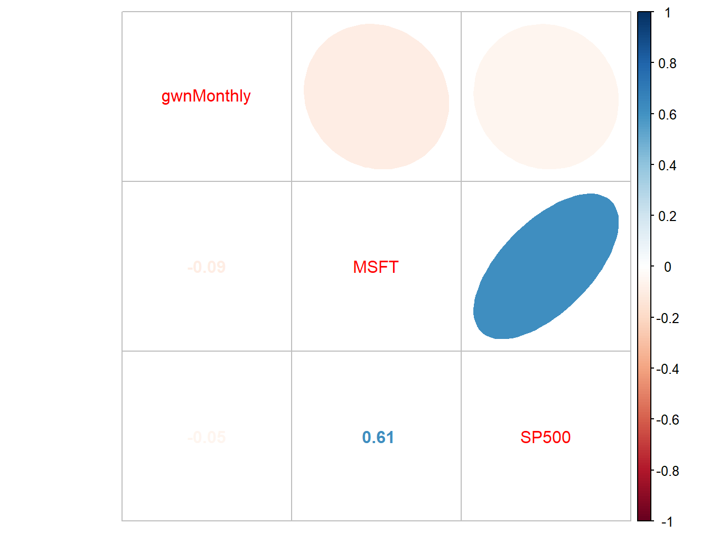
corrplot().The color scheme shows the magnitudes of the correlations (blue for positive and red for negative) and the orientation of the ellipses show the magnitude and direction of the linear associations. \(\blacksquare\)
The dynamic interactions between two observed time series \(\{x_{t}\}_{t=1}^{T}\)and \(\{y_{t}\}_{t=1}^{T}\) can be measured using the sample cross-lag covariances and correlations defined by: \[\begin{align*} \hat{\gamma}_{xy}^{k} & =\widehat{\mathrm{cov}}(X_{t},Y_{t-k}),\\ \hat{\rho}_{xy}^{k} & =\widehat{\mathrm{corr}}(X_{t},Y_{t-k})=\frac{\hat{\gamma}_{xy}^{k}}{\sqrt{\hat{\sigma}_{x}^{2}\hat{\sigma}_{y}^{2}}}. \end{align*}\] When more than two data series are being analyzed, all pairwise cross-lag sample covariances and sample correlations can be computed at once using matrix algebra. For a time series of \(N\) data series \(\{\mathbf{x}_{t}\}_{t=1}^{T},\) where \(\mathbf{x}_{t}=(x_{1t},\ldots,x_{Nt})^{\prime},\) the sample lag \(k\) cross-lag covariance and correlation matrices are computed using: \[ \hat{\boldsymbol{\Gamma}}_{k} = \frac{1}{T-1}\sum_{t=k+1}^{T}(\mathbf{x}_{t}-\hat{\boldsymbol{\mu}})(\mathbf{x}_{t-k}-\hat{\boldsymbol{\mu}})^{\prime}, \tag{5.16}\] \[ \hat{\mathbf{C}}_{k} = \hat{\mathbf{D}}^{-1}\hat{\boldsymbol{\Gamma}}_{k}\hat{\mathbf{D}}^{-1}, \tag{5.17}\] where \(\hat{\mathbf{D}}\) is defined in Equation 5.14.
Example 5.25 (Sample cross-lag covariances and correlations between Microsoft and S&P 500 returns) Consider computing the cross-lag covariance and correlation matrices Equation 5.16 and Equation 5.17 for \(k=0,1,\ldots,5\) between Microsoft and S&P 500 monthly returns. These matrices may be computed using the R function acf() as follows:
Ghat = acf(coredata(msftSp500MonthlyRetS), type="covariance",
lag.max=5, plot=FALSE)
Chat = acf(coredata(msftSp500MonthlyRetS), type="correlation",
lag.max=5, plot=FALSE)
names(Ghat)
#> [1] "acf" "type" "n.used" "lag" "series" "snames"Here, Ghat and Chat are objects of class "acf" for which there are print and plot methods. The acf components of Ghat and Chat are 3-dimensional arrays containing the cross lag matrices Equation 5.16 and Equation 5.17, respectively. For example, to extract \(\hat{\mathbf{C}}_{0}\) and \(\hat{\mathbf{C}}_{1}\) use:
# Chat0
Chat$acf[1,,]
#> [,1] [,2]
#> [1,] 1.000 0.614
#> [2,] 0.614 1.000
# Chat1
Chat$acf[2,,]
#> [,1] [,2]
#> [1,] -0.1931 -0.0135
#> [2,] -0.0307 0.1232The print method shows the sample autocorrelations of each variable as well as the pairwise cross-lag correlations:
Chat
#>
#> Autocorrelations of series 'coredata(msftSp500MonthlyRetS)', by lag
#>
#> , , MSFT
#>
#> MSFT SP500
#> 1.000 ( 0) 0.614 ( 0)
#> -0.193 ( 1) -0.031 (-1)
#> -0.114 ( 2) -0.070 (-2)
#> 0.193 ( 3) 0.137 (-3)
#> -0.139 ( 4) -0.030 (-4)
#> -0.023 ( 5) 0.032 (-5)
#>
#> , , SP500
#>
#> MSFT SP500
#> 0.614 ( 0) 1.000 ( 0)
#> -0.014 ( 1) 0.123 ( 1)
#> -0.043 ( 2) -0.074 ( 2)
#> 0.112 ( 3) 0.101 ( 3)
#> -0.105 ( 4) 0.073 ( 4)
#> -0.055 ( 5) -0.010 ( 5)These values can also be visualized using the plot method:
plot(Chat, lwd=2)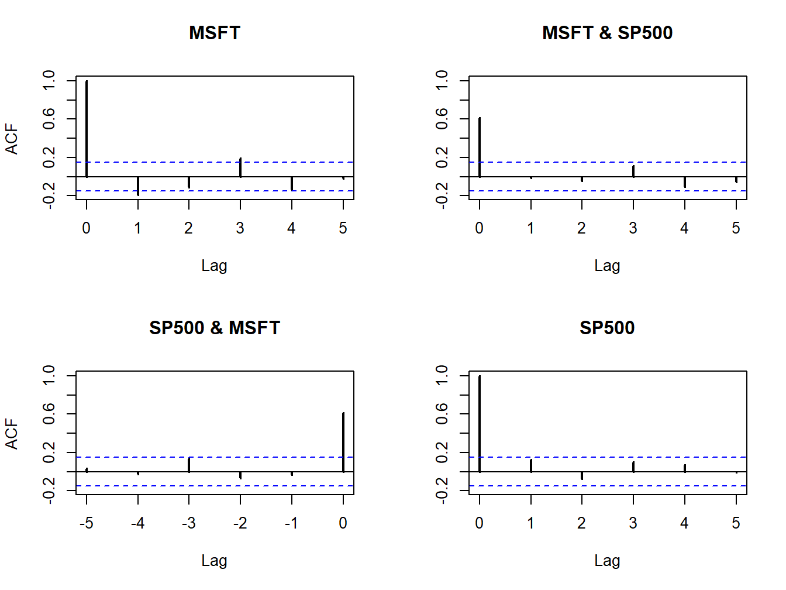
Figure 5.28 shows the resulting four-panel plot. The top-left and bottom-right (diagonal) panels give the SACFs for Microsoft and S&P 500 returns. The top-right plot gives the cross-lag correlations \(\hat{\rho}_{msft,sp500}^{k}\) for \(k=0,1,\ldots,5\) and the bottom-left panel gives the cross-lag correlations \(\hat{\rho}_{sp500,msft}^{k}\) for \(k=0,1,\ldots,5\). The plots show no evidence of any dynamic feedback between the return series. \(\blacksquare\)
The assumption that asset returns are covariance stationary implies that the asset return means (\(\mu_i\)), variances (\(\sigma_i^2\)), covariances (\(\sigma_{ij}\)), and correlations (\(\rho_{ij}\)) are constant over time for all assets \(i\) and \(j\). Essentially, this means that the economic environment remains constant over time. Clearly, this is a strong assumption and you have seen evidence in the graphical descriptive statistics that this assumption might be suspect. For example, you have seen that the volatility of asset returns appears to change over time. In this section, I introduce rolling descriptive statistics to further investigate the appropriateness of the covariance stationary assumption of asset returns.
A commonly used technique to investigate whether certain asset return characteristics are constant over time is to compute sample descriptive statistics over rolling sub-sample windows of fixed length. To illustrate, suppose one is interested in determining if the expected return parameter of an asset return \(\mu\) is constant over time. Assume returns are observed over a sample of size \(T\). An informal way to do this is to compute estimates of \(\mu\) over rolling windows of length \(n<T\):
\[ \hat{\mu}_{t}(n) =\frac{1}{n}\sum_{k=0}^{n-1}r_{t-k}=\frac{1}{n}(r_{t}+r_{t-1}+\cdots+r_{t-n+1}), \tag{5.18}\]
for \(t=n,\ldots,T\). Here \(\hat{\mu}_{n}(n)\) is the sample mean of the returns \(\{r_{t}\}_{t=1}^{n}\) over the first sub-sample window of size \(n\). Then \(\hat{\mu}_{n+1}(n)\) is the sample mean of the returns \(\{r_{t}\}_{t=2}^{n+1}\) over the second sub-sample window of size \(n\). Continuing in this fashion I roll the sample window forward one observation at a time and compute \(\hat{\mu}_{t}(n)\) until I arrive at the last sub-sample window of size \(n\). The end result is \(T-n+1\) rolling estimates \(\left\{\hat{\mu}_{n}(n),\,\hat{\mu}_{n+1}(n),\ldots,\hat{\mu}_{T}(n)\right\}\).
If returns are covariance stationary then \(\mu\) is constant over time and you would expect that \(\hat{\mu}_{n}(n)\approx\hat{\mu}_{n+1}(n)\approx\cdots\approx\hat{\mu}_{T}(n)\). That is, the estimates of \(\mu\) over each rolling window should be similar. I would not expect them to be exactly equal due to sampling uncertainty but they should not be drastically different. In contrast, if returns are not covariance stationary due to time variation in \(\mu\) then you would expect to see meaningful time variation in the rolling estimates \(\left\{\hat{\mu}_{n}(n),\,\hat{\mu}_{n+1}(n),\ldots,\hat{\mu}_{T}(n)\right\}\).
A natural way to see the time variation in \(\{\hat{\mu}_{t}(n)\}_{t=n}^T\) is to make a time series plot of these rolling estimates as illustrated in the next example.
Example 5.26 (Rolling mean estimates for Microsoft S&P 500 Index and simulated GWN) Consider computing rolling estimates of \(\mu\) for Microsoft, Starbucks and the S&P 500 index returns. You can easily do this using the zoo function rollapply(), which applies a user-specified function to a time series over rolling windows of fixed size. The arguments to rollapply() are:
args(zoo:::rollapply.zoo)
#> function (data, width, FUN, ..., by = 1, by.column = TRUE, fill = if (na.pad) NA,
#> na.pad = FALSE, partial = FALSE, align = c("center", "left",
#> "right"), coredata = TRUE)
#> NULLwhere data is either a "zoo" or "xts" object, width is the window width, FUN is the R function to be applied over the rolling windows, ... are any optional arguments to be supplied to FUN, by specifies how many observations to increment the rolling windows, by.column specifies if FUN is to be applied to each column of data or to be applied to all columns of data, and align specifies the location of the time index in the window. The function returns an “xts/zoo” object containing the rolling estimates.
For example, to compute 24-month rolling estimates of \(\mu\) for Microsoft, S&P 500 index, and simulated GWN data (that matches the mean and volatility of Microsoft returns), incremented by one month with the time index aligned to the end of the window use:
roll.data = merge(msftMonthlyRetS,sp500MonthlyRetS,gwnMonthly)
colnames(roll.data) = c("MSFT", "SP500", "GWN")
roll.muhat = rollapply(roll.data, width=24, by=1, by.column=TRUE,
FUN=mean, align="right")
class(roll.muhat)
#> [1] "xts" "zoo"The object roll.muhat is an “xts” object with three columns giving the rolling mean estimates for the GWN data, Microsoft, and the S&P 500 index. The first 23 months of data are NA as you need at least 24 months of data to compute the first rolling estimates:
head(roll.muhat, n=3)
#> MSFT SP500 GWN
#> Feb 1998 NA NA NA
#> Mar 1998 NA NA NA
#> Apr 1998 NA NA NAThe first rolling estimates are for the 24-months just prior to January, 2000 and the last rolling estimates are for the 24-months just prior to May 2012.
head(na.omit(roll.muhat), n=3)
#> MSFT SP500 GWN
#> Jan 2000 0.0487 0.0161 -1.68e-03
#> Feb 2000 0.0394 0.0124 -9.85e-05
#> Mar 2000 0.0450 0.0143 1.39e-02
tail(na.omit(roll.muhat), n=3)
#> MSFT SP500 GWN
#> Mar 2012 0.00869 0.00894 -0.0307
#> Apr 2012 0.00661 0.00801 -0.0324
#> May 2012 0.00948 0.00882 -0.0298The rolling means are shown in Figure 5.29 created using:
plot(roll.muhat, main="", multi.panel=FALSE, lwd=2,
col=c("black", "red", "green"), lty=c("solid", "solid", "solid"),
major.ticks="years", grid.ticks.on="years",
legend.loc = "topright")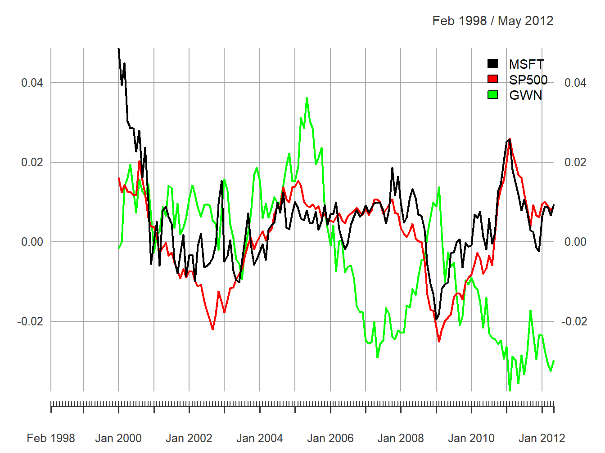
All of the rolling estimates show time variation over the sample, including the simulated GWN returns which have a constant mean by construction. The ranges of the rolling estimates are:
ans = apply(na.omit(roll.muhat),2,range)
rownames(ans) = c("Min", "Max")
ans
#> MSFT SP500 GWN
#> Min -0.0194 -0.0251 -0.0376
#> Max 0.0487 0.0260 0.0362Interestingly, the rolling estimates for Microsoft and the S&P 500 index exhibit a similar pattern of time variation. The estimates start positive at the end of the dot-com boom, decrease from 2000 to mid 2002 (Microsoft and the S&P 500 index become negative), increase from 2003 to 2006 during the booming economy, fall sharply during the financial crisis period 2007 to 2009, and increase from 2009 to 2011, and decrease afterward. The Microsoft and S&P 500 estimates follow each other very closely due to their moderately strong positive correlation of 0.614. Somewhat surprisingly, the rolling means for the simulated GWN data also show substantial time variation over the sample. Since the true mean of the simulated GWN data is constant, the variation observed in the rolling means represents sampling uncertainty due to the small sample sizes of the rolling means. The magnitude of the variation in the rolling mean estimates for the GWN data should make us pause in concluding there is substantial change in the mean estimates of Microsoft (and possibly the S&P 500). However, the fact that the rolling estimates for Microsoft and the S&P 500 index behave as expected during the booms and busts strongly suggests that the underlying mean values for these assets are not constant over the full sample. \(\blacksquare\)
To investigate time variation in return volatility, I compute rolling estimates of \(\sigma^{2}\) and \(\sigma\) over fixed windows of size \(n<T\): \[ \hat{\sigma}_{t}^{2}(n) =\frac{1}{n-1}\sum_{k=0}^{n-1}(r_{t-k}-\hat{\mu}_{t}(n))^{2}, \tag{5.19}\] \[ \hat{\sigma}_{t}(n) =\sqrt{\hat{\sigma}_{t}^{2}(n)}. \tag{5.20}\] If return volatility is constant over time, then you would expect that \(\hat{\sigma}_{n}(n)\approx\hat{\sigma}_{n+1}(n)\approx\cdots\approx\hat{\sigma}_{T}(n)\). That is, the estimates of \(\sigma\) over each rolling window should be similar. In contrast, if volatility is not constant over time then you would expect to see meaningful time variation in the rolling estimates \(\left\{\hat{\sigma}_{n}(n),\,\hat{\sigma}_{n+1}(n),\ldots,\hat{\sigma}_{T}(n)\right\}\).
Example 5.27 (Rolling volatility estimates for Microsoft Starbucks and the S&P 500 Index) To compute and plot 24-month rolling estimates of \(\sigma\) for Microsoft, S&P 500 index, and GWN returns incremented by one month with the time index aligned to the beginning of the window use:
roll.sigmahat = rollapply(roll.data,width=24, by=1, by.column=TRUE,
FUN=sd, align="right")The rolling estimates are illustrated in Figure 5.30.
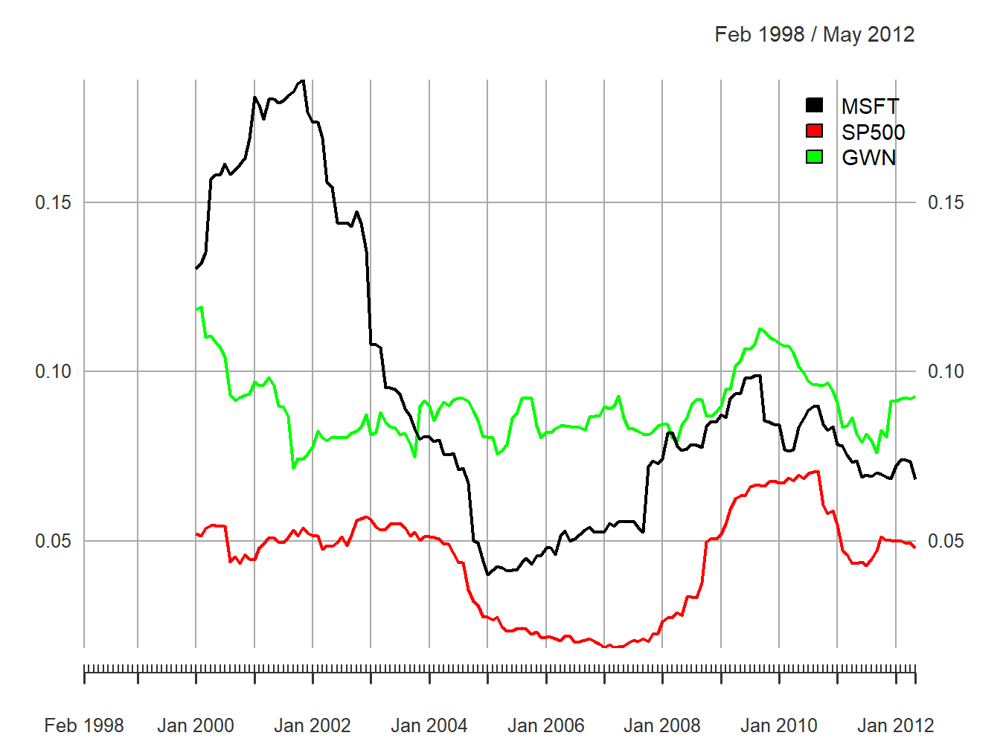
The rolling volatilities for Microsoft and the S&P 500 index show a similar pattern of time variation over the sample but the Microsoft volatilities are considerably more variable:
ans = apply(na.omit(roll.sigmahat),2,range)
rownames(ans) = c("Min", "Max")
ans
#> MSFT SP500 GWN
#> Min 0.0402 0.0186 0.0716
#> Max 0.1863 0.0706 0.1192The rolling volatilities for Microsoft peak at about \(18\%\) per month at the end of the dot-com boom, fall sharply to about \(4\%\) per month at the beginning of 2005, then level off until the beginning of the financial crisis, and increase during the financial crisis to about \(10\%\) per month and fall slightly afterward. The S&P 500 volatilities have a similar pattern as the Microsoft volatilities but their movements are not as extreme. In contrast, the rolling volatilities of the GWN series are fairly stable bouncing between \(7\%\) and \(12\%\). The time variation exhibited by the rolling volatilities of Microsoft and the S&P 500 index places additional doubt on the covariance stationarity assumption for returns. \(\blacksquare\)
To investigate time variation in the correlation between two asset returns, \(\rho_{ij}\), one can compute the rolling covariances and correlations over fixed windows of size \(n<T\): \[ \hat{\sigma}_{ij,t}(n) =\frac{1}{n-1}\sum_{k=0}^{n-1}(r_{i,t-k}-\hat{\mu}_{i}(n))(r_{j,t-k}-\hat{\mu}_{j}(n)), \tag{5.21}\] \[ \hat{\rho}_{ij,t}(n) =\frac{\hat{\sigma}_{ij,t}(n)}{\hat{\sigma}_{i,t}(n)\hat{\sigma}_{j,t}(n)}. \tag{5.22}\]
Example 5.28 (Rolling correlation estimates for Microsoft Starbucks and the S&P 500 index) A function to compute the pair-wise sample correlations between Microsoft, Starbucks and the S&P 500 index is
rhohat = function(x) {
corhat = cor(x)
corhat.vals = corhat[lower.tri(corhat)]
names(corhat.vals) = c("MSFT.SP500", "MSFT.GWN", "SP500.GWN")
corhat.vals
}Using the function rhohat(), 24-month rolling estimates of \(\rho_{ij}\) for Microsoft, Starbucks and the S&P 500 index incremented by one month with the time index aligned to the beginning of the window can be computed using
roll.rhohat = rollapply(roll.data, width=24, FUN=rhohat,
by=1, by.column=FALSE, align="right")
head(na.omit(roll.rhohat),n=3)
#> MSFT.SP500 MSFT.GWN SP500.GWN
#> Jan 2000 0.638 0.392 0.278
#> Feb 2000 0.637 0.345 0.244
#> Mar 2000 0.663 0.415 0.377Notice that by.column=FALSE in the call to rollapply(). This is necessary as the function rhohat() operates on all columns of the data object roll.data. The rolling estimates are illustrated in Figure 5.31.
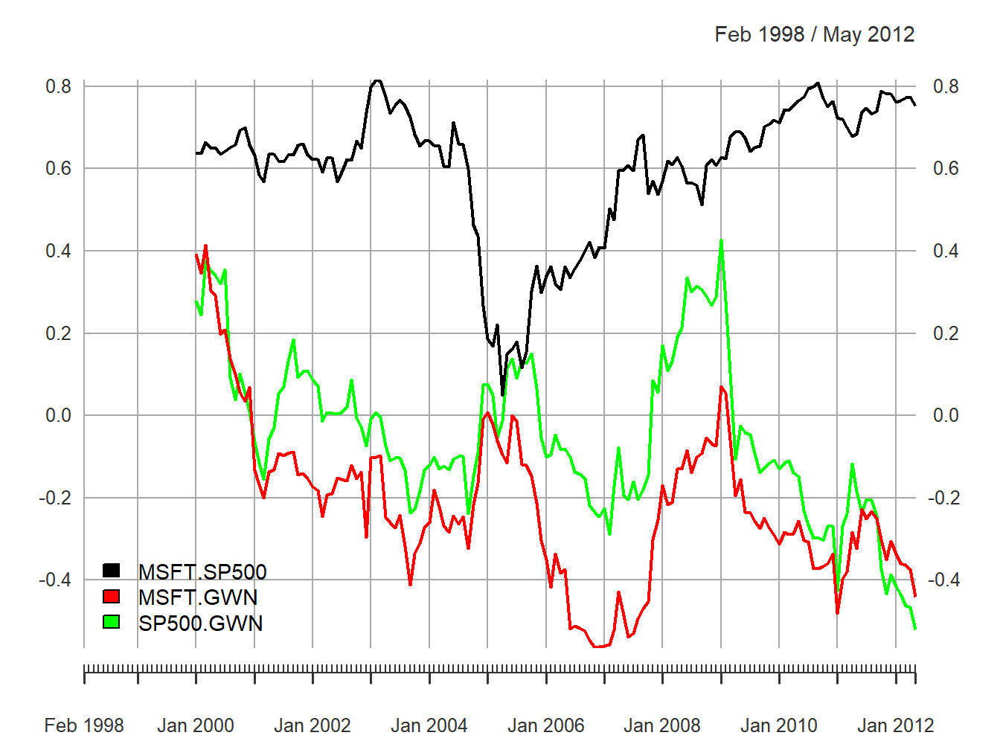
The ranges of the rolling correlations are:
ans = apply(na.omit(roll.rhohat),2,range)
rownames(ans) = c("Min", "Max")
ans
#> MSFT.SP500 MSFT.GWN SP500.GWN
#> Min 0.0487 -0.565 -0.521
#> Max 0.8169 0.415 0.428The rolling correlations between Microsoft and the S&P 500 index show an interesting pattern. They start moderately high, around 0.6, then plunge to about 0.05 in early 2005, and then gradually pick back up to about 0.8 at the end of the sample. The rolling correlations are highest during the financial crisis periods and lowest during the calm periods. Interestingly, the rolling correlations between the GWN series and Microsoft, and the GWN series and the S&P 500 index fluctuate somewhat randomly between -0.5 and 0.5 and show no particular pattern. There is compelling evidence that the correlation between Microsoft and the S&P 500 index is not constant over time. \(\blacksquare\)
It must be kept in mind that the rolling descriptive statistics are informal diagnostics for evaluating the assumption of covariance stationarity. As you have seen, there is considerably sampling variability in the rolling statistics due to the small window size which can make it difficult to untangle statistical noise from true changes in the underlying parameters. In Chapter Chapter 9 I will consider formal statistical tests for constant parameters that can give better evidence for or against the assumption of covariance stationarity.
To be completed
A stylized fact is something that is generally true but not always. From the data analysis of the daily and monthly returns on Microsoft and the S&P 500 index I observe a number of stylized facts that tend to be true for other individual assets and portfolios of assets. For monthly data I observe the following stylized facts:
Daily returns have some features in common with monthly returns and some not. The common features are M1 and M3-M7 above. The stylized facts that are specific to daily returns are:
These stylized facts of daily and monthly asset returns are the main features of returns that models of assets returns should capture. A good model is one that can explain many stylized facts of the data. A bad model does not capture important stylized facts.
(Fama 1976) is the first book that provides a comprehensive descriptive statistical analysis of asset returns. Much of the material in this chapter, and this book, is motivated by Fama’s book. Several recent textbooks discuss exploratory data analysis of finance time series. This discussion in this chapter is similar to that presented in (Carmona 2014), (Jondeau, Poon, and Rockinger 2007), (Ruppert and Matteson 2015), (Tsay 2010), (Tsay 2014), and (Zivot 2016).
Mention books by Carol Alexander
Mention R packages for descriptive statistics: dataExplorer,
Exercise 5.1 Compute time plots with ggplot2 function autoplot()
Exercise 5.2 In this question, you will compute descriptive statistics for the continuously compounded monthly return data on the Vanguard long term bond index fund (VBLTX), Fidelity Magellan stock mutual fund (FMAGX), and Starbucks stock (SBUX). You will use the R packages corrplot, IntroCompFinR, PerformanceAnalytics, tseries and zoo.
get.hist.quote() to download from Yahoo! the monthly adjusted closing prices on VBLTX, FMAGX and SBUX over the period 1998-01-01 through 2009-12-31. Download these prices as "zoo" objects.Return.calculate() to compute continuously compounded monthly returns and remove the first NA observation.plot.zoo(). Comment on any relationships between the returns suggested by the plots. Pay particular attention to the behavior of returns toward the end of 2008 at the beginning of the financial crisis.fourPanelPlot() to make a four-panel plot containing a histogram, boxplot, normal QQ-plot, and SACF plot. Do the return series look normally distributed? Briefly compare the return distributions. Do you see any evidence of time dependence in the returns?summary(), mean(), var(), stdev(), and the PerformanceAnalytics functions skewness() and kurtosis(). Compare and contrast the descriptive statistics for the three assets. Which asset appears to be the riskiest asset?pairs() function to create all pair-wise scatterplots of returns Comment on the direction and strength of the linear relationships in these plots.corrplot() and corrplot.mixed() to plot the correlation matrix of the returns on the three assets.var(), cov(), and cor() to compute the sample covariance matrix and sample correlation matrix of the returns. Comment on the direction and strength of the linear relationships suggested by the values of the covariances and correlations.Exercise 5.3 In this question, you will compute descriptive statistics for the continuously compounded weekly return data on the Vanguard long term bond index fund (VBLTX), Fidelity Magellan stock mutual fund (FMAGX), and Starbucks stock (SBUX). Repeat the analysis for the monthly returns but use instead weekly returns computed from end-of-week adjusted closing prices.
Exercise 5.4 In this question, you will compute descriptive statistics for the continuously compounded daily return data on the Vanguard long term bond index fund (VBLTX), Fidelity Magellan stock mutual fund (FMAGX), and Starbucks stock (SBUX). Repeat the analysis for the monthly returns but use instead daily returns computed from end-of-day adjusted closing prices.
Exercise 5.5 In this problem you will analyze the monthly simple returns on the Vanguard S&P 500 index (VFINX) and Amazon stock (AMZN) over the 5-year period January 2010, through January 2015. For this period there are T=60 monthly returns. The monthly prices for VFINX are in the IntroCompFinR object VangardPrices and the daily prices for AMZN are in the IntroCompFinR object amznDailyPrices.
fourPanelPlot(), create descriptive statistics plots for each asset. In addition, compute Based on statistics, do the returns on VFINX and AMZN look normally distributed? Is there any evidence of linear time dependence? Briefly justify your answer.Exercise 5.6 (Descriptive statistics for weekly data)
Create weekly time series for MSFT, SP500
Repeat graphical and numerical descriptive statistics
Deduce stylized facts for weekly data
Exercise 5.7 (Rolling descriptive statistics for daily data) TBD
Exercise 5.8 Loading data and computing returns
Load the daily price data from IntroCompFinR, and create monthly returns over the period Jan 1998 through Dec 2014:
data(amznDailyPrices, baDailyPrices, costDailyPrices, jwnDailyPrices, sbuxDailyPrices)
fiveStocks = merge(amznDailyPrices, baDailyPrices, costDailyPrices, jwnDailyPrices, sbuxDailyPrices)
fiveStocks = to.monthly(fiveStocks, OHLC=FALSE)Let’s look at the data
head(fiveStocks, n=3)
#> AMZN BA COST JWN SBUX
#> Jan 1998 4.92 34.0 17.4 9.4 4.24
#> Feb 1998 6.42 38.9 19.6 10.6 4.59
#> Mar 1998 7.13 37.4 21.4 11.8 5.25tail(fiveStocks, n=3)
#> AMZN BA COST JWN SBUX
#> Oct 2014 305 123 128 72 75.0
#> Nov 2014 339 134 137 76 80.9
#> Dec 2014 310 129 137 79 81.8Next, let’s compute monthly simple returns using the PerformanceAnalytics function Return.Calculate()
fiveStocksRet = na.omit(Return.calculate(fiveStocks, method = "simple"))
head(fiveStocksRet, n=3)
#> AMZN BA COST JWN SBUX
#> Feb 1998 0.3049 0.1425 0.1267 0.1298 0.0825
#> Mar 1998 0.1106 -0.0393 0.0920 0.1121 0.1438
#> Apr 1998 0.0729 -0.0396 0.0468 0.0262 0.0629I removed the missing January return using the function na.omit().
Part I: Univariate Graphical Analysis
Make time plots of the return data using the zoo function plot.zoo(). Comment on any relationships between the returns suggested by the plots.
Make a cumulative return plot (equity curve) showing the future value of $1 invested in each asset. Which assets gave the best and worst future values over the investment horizon? Hint: you can use the cumprod() function or the PerformanceAnalytics function chart.CumReturns().
For each return series, make a four panel plot containing a histogram, boxplot, normal QQ-plot and SACF. Do the return series look normally distributed? Is there any evidence of time dependence? Briefly compare the return distributions. Hint: the fourPanelPlot() function only works on one asset at a time. So call the function for each asset. For example, fourPanelPlot(fiveStocksRet[, "AMZN])
Part II: Univariate Numerical Summaries
Compute numerical descriptive statistics for all assets using the R functions mean(), var(), stdev(), and the PerformanceAnalytics functions skewness() and kurtosis(). Compare and contrast the descriptive statistics for the five assets. Which asset appears to be the riskiest asset?
Using the monthly mean return for each asset, compute an estimate of the mean annual return. Hint: use the square root of time rule for cc returns. (The square root of time rule is exact for continuously compounded returns but can be applied as an approximation to simple returns.)
Using the monthly return standard deviation for each asset, compute an estimate of the annual return standard deviation. Hint: use the square root of time rule for cc returns. (The square root of time rule is exact for continuously compounded returns but can be applied as an approximation to simple returns.)
Part III: Historical VaR
Part IV. Bivariate Graphical Analysis
Use the pairs() function to create all pair-wise scatter plots of returns. Comment on the direction and strength of the linear relationships in these plots.
Use the corrplot function corrplot.mixed() to plot the correlation matrix of the returns on the five assets. Comment on what you see.
Part V. Bivariate Numerical Summary Statistics
Use the R functions cov(), and cor() to compute the sample covariance matrix and sample correlation matrix of the returns. Comment on the direction and strength of the linear relationships suggested by the values of the covariances and correlations.
Part VI. Stylized Facts
An adjusted closing price is adjusted for dividend payments and stock splits. Any dividend payment received between closing dates are added to the close price. If a stock split occurs between the closing dates then the all past prices are divided by the split ratio. The ticker symbol ^gspc refers to the actual S&P 500 index, which is not a tradeable security. There are several mutual funds (e.g., Vanguard’s S&P 500 fund with ticker VFINF) and exchange traded funds (e.g., State Street’s SPDR S&P 500 ETF with ticker SPY) which track the S&P 500 index that are investable.↩︎
The returns can still be covariance stationary and exhibit time varying conditional volatility. This is explored in chapter 10.↩︎
In this book, a “hat” on top of a symbol denotes that it is an estimate the underlying symbol.↩︎
There is no unique way to determine the empirical quantile from a sample of size \(N\) for all values of \(\alpha\). The R function quantile() can compute empirical quantile using one of seven different definitions.↩︎
Even with data simulated from a normal distribution, the empirical quantiles in the extreme left and right tails can deviate a bit from the straight line due to estimation error. For this reason, small deviations from linearity in the tails should be ignored.↩︎
The coredata() function is used to extract the data as a "numeric" object because qqPlot() does not work correctly with "zoo" or xts objects.↩︎
Values with hats, "^", denote sample estimates of the corresponding population quantity. For example, the sample mean \(\hat{\mu}_{x}\) is the sample estimate of the population expected value \(\mu_{X}\).↩︎
If there is only one observation in the sample then it is impossible to create a measure of spread in the sample. You need at least two observations to measure deviations from the sample average. Hence the effective sample size for computing the sample variance is \(T-1\).↩︎
Similar functions are available in the moments package.↩︎
The coredata() function is used to extract the data from the zoo object because boxplot() doesn’t like "xts" or "zoo" objects.↩︎